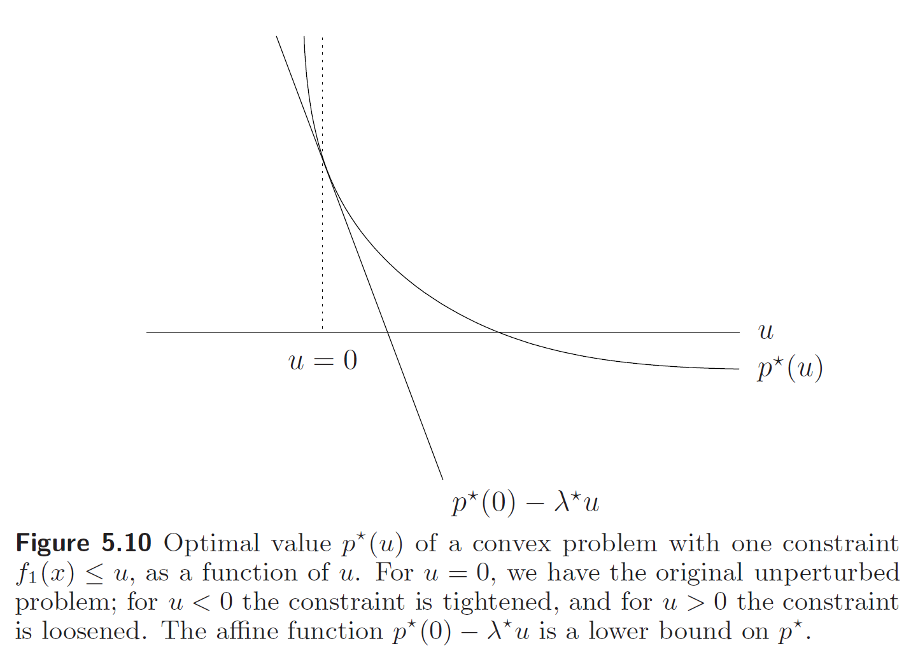

凸优化学习笔记(一)
内容主要来自MIT EE364a课程slides和book；穿插着网络资源和少量自己的理解（这些内容不保证准确）
第1章
第2章 凸集
2.1 仿射集和凸集
直线和线段
设\(x_1\)与\(x_2\)是\(\mathbb R^n\)中两个点，且\(x_1\ne x_2\)，\(\theta \in \mathbb R\)，则过这两点的直线为 \[ y = \theta x_1 + (1 -\theta) x_2 \] 如果限制\(\theta \in [0, 1]\)，则表示以\(x_1,x_2\)为端点的线段；
将上式稍加变形，得到“中心+偏移”的表示形式： \[ y = x_2 + \theta(x_1 - x_2) = x + \theta r \]
仿射集
仿射组合
首先定义仿射组合(affine combination)，是在线性组合的基础上，对组合的权重添加了和为1的限制； \[ \theta_1x_1 + \cdots + \theta_kx_k, \ \ \text{where} \ \ \sum_i^k\theta_i = 1 \] 线性组合的结果是这些向量张成的子空间(subspace)，可以想象到，仿射组合，让这个得到的空间“收缩”了；比如两个不平行向量线性组合成一个与\(\mathbb R^2\)同构的平面，而两个不重合的点仿射组合成一个与\(\mathbb R^1\)同构的直线；
当我们提到\(\mathbb R^n\)中的向量/点，似乎都可以用\(n\)个数字来表示，但是，向量具有方向
仿射集
集合\(C\subseteq \mathbb R^n\)是仿射集(affine set)，当且仅当对于任意的\(\theta \in R\), \(x_1, x_2\in C\)且\(x_1\ne x_2\)，有\(\theta x_1 + (1 -\theta) x_2 \in C\)；
书中对于充分条件、必要条件、充要条件划分的好像不是很细致，这里在书中的描述是，is a affine set if xxxx，但是这里使用的是iff.
接下来，引入仿射集的另一个定义：\(C\)是仿射集，当且仅当\(C\)中所有元素的仿射组合在\(C\)中；
两个定义等价的证明
笔者在第一次看到这两个概念的时候，总觉得第一个概念定义的是一堆直线的上的点的集合，然而这些线上的点又可以互相连线，如此反复递归下去，直到铺满整个平面；下面，笔者给出了这两个定义等价的证明；
先证明，\(C\)中所有元素的仿射组合在\(C\)中 \(\Rightarrow\) \(C\)是仿射集：
使用数学归纳法，设\(C\)中有\(k\)个元素：
特殊地，任意两个元素的仿射组合在\(C\)中 \(\Rightarrow\) \(C\)是仿射集；
假设：任意\(k-1\)个元素的仿射组合在\(C\)中 \(\Rightarrow\) \(C\)是仿射集；
证明：\(k\)个元素的仿射组合在\(C\)中 \(\Rightarrow\) \(C\)是仿射集；
满足\(\sum_{i=1}^k\theta_ix_i \in C\)，且\(\sum_{i=1}^k\theta_i = 1\)；
能找到\(\theta_k \ne 1\)，即 \[ \sum_{i=1}^{k-1}\theta_ix_i + \theta_kx_k = (1-\theta_k)\sum_{i=1}^{k-1}\frac{\theta_i}{1-\theta_k}x_i + \theta_kx_k \in C \] 那么，对于\(\sum_{i=1}^{k-1}\frac{\theta_i}{1-\theta_k}x_i\)，注意到，\(\sum_{i=1}^{k-1}\frac{\theta_i}{1-\theta_k}=1\)，根据假设，有\(x' = \sum_{i=1}^{k-1}\frac{\theta_i}{1-\theta_k}x_i \in C\)，则\((1-\theta_k)x'+\theta_k x_k \in C\)；
若总是有\(\theta_k = 1\)，那只可能是\(k=1\)，单元素集是仿射集；
综上，得证；
再证明，\(C\)是仿射集 \(\Rightarrow\) \(C\)中所有元素的仿射组合在\(C\)中：
\(x' = \theta x_1 + (1 -\theta) x_2 \in C\)，设\(p_1+p_2+p_3 = 1\)，\(\theta = \frac{p_1}{p_1 + p_2}\)，任取一个\(x_3\in C\)，则 \[ \begin{split} p_1x_1 + p_2x_2 + p_3x_3 &= (p_1 + p_2)(\theta x_1 + (1-\theta)x_2) + p_3x_3\\ &=(1 - p_3)x' + p_3x_3 \in C \end{split} \] 如此重复，直到推出所有元素的仿射组合属于\(C\)；
相关子空间
在线代中我们提到过线性子空间的定义，满足：包含0向量，对加法和数乘封闭；显然，仿射集不是一个线性子空间，但是我们可以从一个仿射集得到线性子空间；
集合\(V = C-x_0 = \{x - x_0 | x\in C\}\)是\(C\)的相关子空间：显然\(\mathbf 0 = x-x_0 \in V\)，我们需要证明其对加法、数乘的封闭性：设\(v_1, v_2\in V\)，\(\alpha, \beta\in \mathbb R\)，根据子空间定义，有\(v_1+x_0, v_2 + x_0 \in C\)，要证明\(\alpha v_1 + \beta v_2 \in V\)，只要证明\(\alpha v_1 + \beta v_2 + x_0 \in C\)；变换一下，有 \[ \alpha v_1 + \beta v_2 + x_0 = \alpha(v_1 + x_0) + \beta (v_2 + x_0) + (1 - \alpha -\beta)x_0 \] 由于\(\alpha + \beta + (1-\alpha-\beta) = 1\)，则可证\(\alpha v_1 + \beta v_2 + x_0 \in C\)；
因此，仿射集还可以表示为线性子空间+偏移的形式，其中\(x_0\)是\(C\)中任意一点： \[ C=V+x_0 = \{v+x_0|v\in V\} \]
易证，\(\{x|Ax=b\}\)是仿射集，且任何仿射集都可以解释为线性方程组的解集；从而也不难得到，该仿射集对应的子空间是\(A\)的零空间；
这里对于“为什么要引出这些概念”，解释得不错；
任意集合的仿射包
能否对于任何一个一个集合\(C\)，构造一个最小仿射集？
集合\(C\in \mathbb R^n\)中所有的仿射组合构成的集合，称为\(C\)的仿射包（affine hull），记为\(\textbf{aff}\ \ C\)；
仿射集的仿射包就是它自己；
包含集合\(C\)的仿射集有无穷多个，而\(\textbf{aff}\ \ C\)是其中最小的一个；
仿射相关与仿射无关
仿射组合是（特殊的）线性组合，仿射相关一定意味着线性相关，而线性无关一定意味着仿射无关
这三个命令的逆命题不成立
例如在\(\mathbb R^2\)上，三个不共线的点是仿射无关的，但是它们已经仿射组合得到整个\(\mathbb R^2\)平面，因此再加入任何点都将与它们仿射相关；
仿射维度和相对内部
定义任意集合\(C\)的仿射维度=C的仿射包的维度（可以由多少个线性无关向量张成）；仿射维度通常与其他“维度”不一致；
相对内部 (\(\operatorname{relint}\))：（略）
凸集
\(C\)是凸集(convex set)，当且仅当集合\(C\)中任意两点的线段都在\(C\)中；类似于定义仿射集的过程，我们同样可以先定义\(x_1,\cdots, x_k\)的凸组合为： \[ \theta_1x_1 + \cdots + \theta_k x_k, ~\text{where}~\sum_{i=1}^k\theta_i = 1 ~\text{and}~ \theta_i \ge 0 \] 与仿射集类似的，凸集的定义可扩展为：\(C\)是凸集，当且仅当\(C\)中所有点的凸组合都在\(C\)中；
凸集的性质还可以扩展到无限个点的凸组合，设对于任意的\(x\in C\)，有\(p: \mathbb R^n \rightarrow \mathbb R\)，满足\(p(x)\ge 0\)且\(=1\)，\(C\subseteq \mathbb R^n\)是凸集，则有： \[ \int_C p(x)dx \in C \]
将\(p\)视为连续随机变量概率密度函数/离散随机变量的概率分布，则上式说明，凸集中随机变量的期望，也属于该凸集；
任意集合\(C\)的凸包(convex hull)\(\operatorname{conv}C\)，是\(C\)中所有点的凸组合的集合；
凸集与任意直线的交集
根据凸集的定义，我们可以得到一条推论，\(C \in \mathbb{R}^m\) 是凸集，当且仅当 \(C\) 与任意直线 \(\{x_0 + vt ~|~ t\in \mathbb{R}\} ~\text{for all } x_0, v \in \mathbb{R}^n\) 的交集是凸集；
练习
练习：设 \(C\) 是如下二次不等式的解集： \[ C = \{x\in\mathbb{R}^n ~|~ x^TAx + b^Tx + c \le 0\} \] 其中，\(A\in \mathbf{S}^n, b\in \mathbb{R}^n c \in \mathbb{R}\)；证明若 \(A\succeq 0\) 时，\(C\) 是凸集；
证明：\(\{x_0 + vt ~|~ t\in \mathbb{R}\}\) 与 \(C\) 的交集为：
\[ \{x_0 + vt ~|~ \alpha t^2 + \beta t + \gamma \le 0\} \]
其中，\(\alpha = v^TAv\)，\(\beta = b^Tv + 2x_0^TAv\)， \(\gamma = c + b^Tx_0 + x_0^T A x_0\)；
该一元二次不等式的解集在 \(\alpha >= 0\) 时为凸集；对于任意直线该条件成立，即对于任意的 \(v\)，有\(v^TAv \ge 0\)，即 \(A\succeq 0\)；证毕；
需要注意的是，\(A\succeq 0\) 是 \(C\) 是凸集的充分非必要条件；例如在 \(A = -1, b = 0, c = -1\) 时，\(C = \mathbb{R}\) 是凸集；凸锥
相比于仿射组合要求组合系数和为1，凸组合要求组合系数和为1且非负，锥组合要求组合系数非负： \[ \theta_1x_1+\cdots+\theta_kx_k, ~\text{where}~\theta_i >0,~ i = 1, \cdots, k \] \(C\)是一个凸锥(convex cone)，当且仅当\(C\)中任意两点的锥组合都在\(C\)中，可以扩展到，\(C\)中所有点的锥组合都在\(C\)中；
\(C\)是一个锥，当任意的\(x\in C\)，\(\theta \ge 0\)，有\(\theta x \in C\)；
任意集合的锥包(conic hull)是\(C\)中所有点的锥组合；
2.2 一些重要的的例子
仿射集一定是凸集，但凸集不一定是仿射集；
凸锥一定是凸集，但凸集不一定是凸锥；
笔者初学时突然不能接受这两条，因为在形状上，凸集总是包含于仿射集或者凸锥，例如，线段是直线的一部分，也是射线的一部分（当然，只有过原点的射线才是凸锥），而先前\((A\subseteq B) \iff (A\Rightarrow B)\)的逻辑关系，被我在潜意识中错误的套用在了这里的空间关系上；并且，在定义的形式上，凸集的定义最长，好像看起来，凸集的条件是最“强”的；
事实恰恰相反，凸集的条件最弱；如果任意两点的连线上的所有的点，都在该集合中，那又何尝不能满足任意两点间线段上的点，都在该集合中的条件呢？
- \(\emptyset\)，\(\{x_0\}\)，\(\mathbb R^n\)都是\(\mathbb R^n\)中的仿射集（因此，是凸集）
- 所有的直线都是仿射集，如果过原点，那么是子空间，也是凸锥；
- 线段是凸集，但不是仿射集（除非退化成一点）；
- 射线\(\{x_0+\theta v|\theta \ge 0\}, ~\text{where}~ v\ne 0\)是凸集，但不是仿射集；如果\(x_0=0\)，则
下面介绍的仍然是一些具有凸性的结构：
超平面与半空间
超平面(hyperplane)是形如\(\{x|a^Tx=b\}\)，其中\(a\in \mathbb R^n\)，\(a\ne 0\)， \(b\in R\)的集合；
半空间(halfspaces)是形如\(\{x|a^Tx\le b\}\)，其中\(a\in \mathbb R^n\)，\(a\ne 0\)， \(b\in R\)；
欧几里得球与椭球
\(\mathbb R^n\)中的欧几里得球(ball)： \[ B(x_c, r) = \{x~|~\Vert x-x_c\Vert _2\le r\} = \{x_c + ru~|~\Vert u\Vert _2\le 1\}, ~r > 0 \] 椭球(ellipisoid)： \[ \begin{split} \epsilon &= \{x~|~(x-x_c)^TP^{-1}(x-x_c)\le 1\}\\ &= \{x_c + Au ~|~ \Vert u\Vert _2 \le 1\} \end{split} \] 其中，\(P\)是对称的正定矩阵，\(P \succ 0\)，其特征值是椭球的半轴长的平方，对于球体，\(P=r^2I\)；\(A=P^{1/2}\)，是对称的，正定的，（意味着非奇异的）的方阵；
如果\(A\)是半正定的，（意味着可能有0特征值，即非奇异），则为退化椭球(degenerate ellipsoid)，同样也是凸集；
范式球与范式锥
将欧几里得球中的二范数换成其他任意范数，即是范式球(norm ball)；
范式锥(norm cone)： \[ C = \{(x, t)~|~\Vert x\Vert <t\}\subseteq \mathbb R^n \]
范数的三角不等式的性质，使得norm ball是凸的；
二次锥(second-order cone / quadradic cone / Lorentz cone / ice-cream cone)，是使用欧几里得范数（二范数）的范式锥
多面体
多面体(polyhedron)由无穷多个线性等式和不等式组成： \[ \begin{split} \mathcal {P} &= \{x~|~a^T_jx\le b_j, ~j=1, \dots, m, ~c^T_jx = d_j, ~j=1, \dots, p\}\\ &= \{Ax\preceq b, ~Cx=d\} \end{split} \] \(\mathbb R^n\)中的非负象限(nonnegative orthant)，既是多面体，又是锥，因而又称为多面锥(polyhedral cone)： \[ \mathbb R^n_+ = \{x\in \mathbb R^n |x_i \ge 0, ~i=1, \dots, n\} = \{x\in \mathbb R^n |x \succeq 0 \} \] 单纯形(simplexes)是另一类重要的多面体，是\(k+1\)个\(\mathbb R^n\)中仿射无关的向量凸组合得到的，又称为\(k\)维（指仿射维度）单纯形 \[ C = \{\theta_0v_0+\dots+\theta_kv_k~|~\theta \succeq 0, ~\mathbf 1^T\theta=1\} \]
1维单纯形是线段，2维单纯形是三角形，3维单纯性是立方体；
如果使用0向量和\(k\)个单位向量凸组合，则称unit simplex：\(x\succeq 0, \mathbf 1^Tx\le 1\)
如果使用\(k\)个单位向量凸组合，则称probability simplex：\(x\succeq 0, \mathbf 1^Tx = 1\)
书中的P33给出了将单纯性的定义转化为多面体定义的推导，这里不再赘述；
不加证明的，作者还给出了多面体的另一种表示形式： \[ \{\theta_1v_1 + \cdots + \theta_kv_k ~|~ \sum_{i=1}^m\theta_i=1, ~\theta_i\ge0, ~i=1,\cdots, k\} \] 其中，\(m\le k\)，即\(m\)个点的凸包和\(k-m\)个点的凸锥的交集；
半正定锥
记\(S^n\)是\(n\times n\)的对称矩阵：\(S^n = \{X\in \mathbb R^{n\times n} ~|~ X = X^T\}\)，使用\(S^n_+\)表示半正定对称矩阵， \(S^n_{++}\)表示正定对称矩阵；
矩阵集合\(S^n\)是凸锥，即半正定矩阵的锥组合仍然为半正定矩阵，可以使用半正定矩阵的二次型定义证明；
书中对于\(S^n_+\)的定义是\(\{X\in S^n ~|~ X \succeq 0\}\)，这里的\(X \succeq 0\)并不意味着矩阵的各个元素都非负，而是\(X\)是半正定的，也等价于\(X\)的各阶主子式非负、特征值非负、\(p^TXp \ge 0\)等等；
2.3 保持凸性的运算
求交
如果\(S_1\)和\(S_2\)是凸集，那么\(S_1 \cap S_2\)是凸集；该定义可以扩展到：无限数量各凸集相交结果为凸集；
每个闭合的凸集都可以表示为（通常是无限个）半空间的交集： \[ S = \cap \{\mathcal H ~|~ \mathcal H ~\mathrm{halfspace}, ~ S\subseteq H\} \]
仿射函数
仿射函数，\(f:\mathbb R^m \rightarrow \mathbb R^n\)，是线性函数和常数的和；记\(S\)是凸集，有： \[ \begin{split} f(S) &= \{f(x) ~|~ x\in S\} \in S \\ f^{-1}(S) &= \{x | f(x) \in S\} \in S \end{split} \] 缩放，平移，投影，笛卡尔积等都是仿射函数；
线性分数函数
首先给出一类特殊的线性分数函数：透视函数(perspective function)，\(P: \mathbb R^{n+1}\rightarrow \mathbb R^n\)，定义域\(\operatorname{dom} P = \mathbb R^n\times \mathbb R_{++}\)，\(P(z, t) = z/t\)；透视函数是依向量的最后一个维度进行归一化，之后抛弃最后一个维度；
齐次坐标==>笛卡尔坐标；小孔成像；
线性分数函数(linear-fraction function)是透视函数和仿射函数的复合函数，记仿射函数\(g:\mathbb R^n \rightarrow \mathbb R^{m + 1}\)： \[ g(x) = \left[ \begin{array}{c} A\\ c^T \end{array} \right] x + \left[ \begin{array}{c} b\\ d \end{array} \right] \] 其中\(A\in \mathbb R^{m \times n}\)， \(c\in \mathbb R^n\)， \(b\in \mathbb R^m\)， \(d\in \mathbb R\)，则线性分数函数,，\(f = P\circ g\)； \[ f(x) = \frac{Ax + b}{c^Tx + d}, ~\operatorname{dom}f =\{x ~|~ c^Tx +d > 0\} \]
凸集\(S\)使用线性分数函数或者逆线性分数函数后，仍然得到凸集；
2.4 广义不等式
真锥和广义不等式
锥\(K\subseteq \mathbb R^n\)是真锥(proper cone)，当满足如下条件：
- \(K\)是凸的
- \(K\)是闭合的（包含边界）
- \(K\)的内部是非空的（不能是扁的）
- \(K\)是pointed（反对称）
将\(\mathbb R^n\)上的偏序关系与真锥\(K\)联系起来： \[ x \preceq_K y \iff y - x \in K \]
\[ x \prec_K y \iff y - x \in \operatorname{int}K \]
例如，非负象限、半正定锥等都是真锥；
广义不等式的性质
- 加法保号性：若\(x\preceq_K y\)且\(u\preceq_K v\)，则\(x + u \preceq_K y + v\)
- 非负数乘保号性
- 传递性
- 自反性
- 反对称性
最小值和极小值
\(x \in S\)是\(S\)的最小值(the minimum)，当且仅当\(S\subseteq x + K\)，其中\(x + K\)含义是\(S\)中其他点均与\(x\)是可比较的，且大于等于（\(\succeq_K\)）\(x\)；显然，最小值不一定存在；
\(x \in S\)是\(S\)的极小值(a minimal)，当且仅当\((x - K) \cap S = \{x\}\)，含义是在\(S\)中能够与\(x\)比较且小于等于\(x\)的点只有\(x\)自己；显然，极小值不唯一，多个极小值之间不能相互比较；
2.5 分离&支持超平面
分离平面理论
记\(C,D\)是非空的不相交的凸集，那么存在\(a\ne 0\)和\(b\)，使得\(a^Tx\le b\)对于所有的\(x\in C\)，且\(a^Tx\ge b\)对于所有的\(x\in D\)。超平面\(\{x|a^Tx=b\}\)就是集合\(C\)和\(D\)的分离超平面(separating hyperplane)。
一个未解决的问题
下面我们用欧式距离为例，验证一下分离平面理论（非严格证明）：
记集合\(C\),\(D\)之间的距离是 \[ \operatorname{dist}(C, D) = \inf\{\Vert u - v\Vert _2 ~|~ u\in C, v \in D\} \]
\(\inf\)表示下界，\(\sup\)表示上界
假设\(\operatorname{dist}(C, D) > 0\)，并且\(c\in C\)，\(d \in D\)是满足\(\Vert c - d\Vert _2 = \operatorname{dist}(C,D)\)的点对；
定义： \[ a = d - c, \quad b =\frac{\Vert d\Vert ^2_2 - \Vert c\Vert ^2_2}{2} \] 我们将证明，仿射函数 \[ f(x) = a^Tx - b = (d - c)^T(x - \frac{d + c}{2}) \] 在\(C\)上是非正的，在\(D\)上是非负的，下面我们将证明对于\(\forall u\in D\)，\(f(u)\ge 0\)，另一边的证明与之类似：
使用反证法，假设： \[ \begin{split} f(u) = (d - c)^T(u - \frac{d + c}{2}) &< 0 \\ (d-c)^T(u - d + \frac{d - c}{2}) &< 0 \\ (d-c)^T(u-d) + \frac{\Vert d - c\Vert ^2_2}{2} &< 0 \\ \Vert (d-c) + (u-d)\Vert _2^2 &< \Vert u - d\Vert _2^2 \\ \Vert u-c\Vert _2 &< \Vert u-d\Vert _2 \end{split} \] 由于\(D\)是凸的，\(\overrightarrow{CD}\)和\(\overrightarrow{DU}\)的夹角是钝角，即\((d-c)^T(u-d)\) < 0，
另外，记\(g(t) = \Vert d + t(u - d) - c\Vert ^2_2\)，观察到 \[ \left.\frac{d}{dt}g(t) \right|_{t=0} = 2(d-c)^T(u-d) < 0 \] 说明该关于\(t\)的二次函数在\(t=0\)附近函数时单调递减的，对于很小的\(t > 0\)，有： \[ g(t) < g(0) = \Vert d-c\Vert _2^2 \] 而在\(t=1\)时，由于\(d\)是\(D\)中距离\(C\)最近的点，有\(g(1) = \Vert u-c\Vert ^2_2 \ge \Vert d - c\Vert ^2_2\)
这里是怎么推出与假设矛盾的？
仿射集与凸集也是可分的
假设凸集\(C\)和仿射集\(D = \{Fu+g ~|~ u\in \mathbb R^m\}\)（\(F\in \mathbb R^{n \times m}\)）不相交，令\(a\ne 0\)，\(b\)满足\(\forall x \in C, ~a^Tx\le b\)，\(\forall x \in D, ~a^Tx\ge b\)，那么有 \[ \forall u \in \mathbb R^{m}, ~a^TFu \ge b - a^Tg \] 而关于\(u\)的线性方程\(a^TFu\)是无界的，除非\(a^TF = 0\)，因而有\(b \ge a^Tg\)；结合上文，我们得到了给出\(C\),\(D\)的分离平面的方式： \[ a^TF = 0, \quad \forall x \in C, ~a^Tx \le a^Tg \]
严格可分
把可分离的定义中的\(\ge\)换成\(>\)，\(\le\)换成\(<\)；
支持超平面
集合\(C\subseteq \mathbb R^n\)，\(x_0\)是其边界\(\operatorname{bd}C\)上的一点，若\(a\ne 0\)满足\(\forall x\in C, ~a^Tx \le a^Tx_0\)，则超平面\(\{x|a^Tx = a^Tx_0\}\)就是\(C\)在\(x_0\)的支持超平面(supporting hyperplane)。
2.6 对偶锥和广义不等式
对偶锥
\(K\)是一个锥，那么 \[ K^*=\{y~|~x^Ty\ge 0 ~\text{for all}~ x \in K\} \] 是\(K\)的对偶锥(dual cone)；
若\(K^*=K\)，则称\(K\)是自对偶(self-dual)的，例如：
- 非负象限
- 半正定锥
矩阵\(X\),\(Y\)的点积的定义是\(\operatorname{tr}(XY) = \sum_{i,j}X_{i,j}Y_{i, j}\)
对偶锥有如下性质：
- \(K^*\)是闭合的且凸的
- \(K_1\subseteq K_2\)意味着\(K_2^* \subseteq K_1^*\)
- \(K^{**}\)是\(K\)的闭合的凸包
对偶广义不等式
真锥\(K\)的对偶锥还是真锥，由此我们有对偶的广义不等式：
\(x \preceq_K y\)当且仅当对于任意的\(\lambda \succeq_{K^*} 0\)，有\(\lambda^Tx \le \lambda^T y\)
\(y - x \in K\)，则对于\(\lambda \in K^*\)，满足\((y - x)^T\lambda \ge 0\)，即\(y^T\lambda \ge x^T \lambda\)，\(\lambda^Ty = y^T\lambda\)，\(\lambda^Tx = x^T\lambda\)
\(x\prec_K y\)当且仅当对于任意的\(\lambda \succeq_{K^*} 0\)且\(\lambda \ne 0\)，有\(\lambda^Tx < \lambda^Ty\)
由于\(K^{**} = K\)，所以上述广义不等式中，\(K\)和\(K^*\)可以互换；
对偶不等式下的最小值和极小值
记\(x\)是\(S\)的最小值（在\(\preceq_K\)意义下），当且仅当\(\forall \lambda\succ_{K*}0\)，\(x\)是使得\(\lambda^Tz\)在\(z\in S\)上取得最小值的唯一解；
\(\lambda^Tx \le \lambda^Tz, ~\forall z \in S\)，这也就让我们得到了集合\(S\)在\(x\)位置的严格支持平面（严格性来自于\(x\)是惟一的）： \[ \{z ~|~ \lambda^T(z-x) = 0\} \] 记\(x\)是\(S\)的极小值（在\(\preceq_K\)意义下），当\(\forall \lambda\succ_{K*}0\)，\(x\)是使得\(\lambda^Tz\)在\(z\in S\)上取得最小值的解；
- \(x\)是\(S\)的极小值，\(\implies\) \(\forall \lambda\succ_{K*}0\)，\(x\)是使得\(\lambda^Tz\)在\(z\in S\)上取得最小值的解，是错的
- \(S\)是凸集，\(x\)是\(S\)的极小值，\(\implies\) \(\forall \lambda\succ_{K*}0\)，\(x\)是使得\(\lambda^Tz\)在\(z\in S\)上取得最小值的解，是错的
- \(S\)是凸集，\(x\)是\(S\)的极小值，\(\implies\) \(\forall \lambda\succeq_{K*}0\)，\(x\)是使得\(\lambda^Tz\)在\(z\in S\)上取得最小值的解，是对的
- \(\forall \lambda\succeq_{K*}0\)，\(x\)是使得\(\lambda^Tz\)在\(z\in S\)上取得最小值的解 \(\implies\) \(x\)是\(S\)的极小值，是错的
第3章 凸函数
3.1 基本属性和例子
定义
函数\(f: \mathbb{R}^n \rightarrow \mathbb{R}\)是凸函数，当且仅当\(\operatorname{dom} f\)是凸集且对于\(\forall x\)，\(y\in \operatorname{dom} f\)，且有\(0\le \theta \le 1\)，满足： \[ f(\theta x + (1 - \theta)y) \le \theta f(x) + (1 - \theta)f(y) \]
在上述定理的基础上，满足在\(x \ne y\)且\(0 < \theta < 1\)时不等式严格取\(<\)， \(f\)是严格凸函数；
如果\(-f\)是（严格）凸函数，那么\(f\)是（严格）凹(concave)函数；
把凸函数限制到直线上
\(f: \mathbb{R}^n \rightarrow \mathbb{R}\) 是凸函数，当且仅当对于任意的 \(x\in \operatorname{dom} f, ~v\in \mathbb{R}^n\)，函数 \(g: \mathbb{R}\rightarrow \mathbb{R}\) \[ \begin{array}{ll} g(t) = f(x + tv), &\operatorname{dom}g = \{t ~|~ x + tv \in \operatorname{dom} f\} \end{array} \] 是关于\(t\)的凸函数；
该方法可以用于检查函数的非凸性：随机生成线条，判断是否是\(\mathbb R\)上的凸函数，如果出现非凸的，既可以证明原函数非凸；
值域扩展
\[ \tilde{f}(x) = \left\{ \begin{array}{ll} f(x)&x\in \operatorname{dom}f\\ \infty&x\notin \operatorname{dom}f \end{array} \right. \]
使用值域扩展可以在描述函数的一些性质时（例如上述的凸性）省略对定义域的强调，在之后所有的凸函数都经过了隐式的值域扩展；
\(f\)是凸函数时，\(\operatorname{dom}f\) 之外的值域扩展到 \(\infty\)，\(f\)是凹函数时，\(\operatorname{dom}f\) 之外的值域扩展到 \(-\infty\)
一阶导条件 (first-order condition)
如果\(f\)是可导的，那么\(f\)是凸函数当且仅当\(\operatorname{dom}f\)是凸集且碎对于\(\forall x, y\in \operatorname{dom} f\)，有 \[ f(y) \ge f(x) + \nabla f(x)^T(y - x) \]
泰勒展开在\(x\)处的一阶展开函数总是低于原函数，即说明原函数是凸的
\(f\)是严格凸的，当且仅当\(\operatorname{dom} f\)是凸集且\(\forall x, y \in \operatorname{dom} f, ~x\ne y\)，有： \[ f(y) > f(x) + \nabla f(x)^T(y - x) \]
二阶导条件 (second-order conditions)
如果\(f\)是二次可导的，那么\(f\)是凸函数，当且仅当对于\(\forall x \in \operatorname{dom} f\)，有 \[ \nabla^2f(x) \succeq 0 \]
对于一元函数，上式意味着二阶导非负，对于多元函数，上式意味着Hessian矩阵是对称半正定的； 直观地考虑，凸性意味着函数在任何一点都至少是向上“弯曲”的
\(f\)是严格凸的，当 \(\forall x \in \operatorname{dom}f\)，有 \[ \nabla^2f(x) \succ 0 \]
更多凸（凹）函数的例子
首先是一些简单的一元函数，使用基本的不等式定义或者二阶导条件就可以证明：
- \(e^{ax}, ~x\in \mathbb{R}\)， \(\forall a \in \mathbb{R}\)，是凸函数
- \(x^{a}, ~x\in \mathbb{R}_{++}\)，\(a\ge 1\)或者\(a \le 0\)时是凸函数，\(0\le a \le 1\)时是凹函数
- \(|x|^p, ~x\in \mathbb{R}\)，\(p \ge 1\)，是凸函数
- \(\log x, ~x\in \mathbb{R}_{++}\)是凹函数；
- \(x\log x, ~x \in \mathbb{R}_{+}\)是凸函数；
接下来是一些多元函数（向量/矩阵函数）
- \(\mathbb{R}^n\)上的范数都是凸函数；
- \(\mathbb{R}^n\)上求最大值是凸函数；
- 二次比一次函数，\(f(x, y) = x^2 / y, (x,y)\in \mathbb{R} \times \mathbb{R}_{++}是凸函数\)；扩展到矩阵分数函数，\(f(x, Y) = x^TY^{-1}x, (x, Y) \in \mathbb{R}^n\times \mathbb{S}^n_{++}\)是凸函数；
- Log-sum-exp函数，是凸函数（该函数也可以视为max函数的soft版本）
- 几何均值函数，是\(\mathbb{R}_{++}^n\)上的凹函数；
- Log-determinant函数，\(f(X) = \log \det X, ~X \in S^n_{++}\)是凹函数；
对于范数而言，其定义中保证满足三角不等式条件，使得范数都是凸的；
其他函数的证明见原教材P73-74, 以及P76 Example3.4
Sublevel sets
函数\(f: \mathbb{R}^n \rightarrow \mathbb{R}\)的\(\alpha\)-sublevel set是： \[ C_\alpha = \{x \in \operatorname{dom} f ~|~ f(x) \le \alpha\} \] 凸函数的sublevel sets也都是凸集；反之并不成立；
Epigraph
函数\(f: \mathbb{R}^n \rightarrow \mathbb{R}\)的图(graph)定义为如下集合： \[ \{(x, f(x)) ~|~ x \in \operatorname{dom} f\} \] 其epigraph定义为如下集合： \[ \{(x, t) ~|~ x \in \operatorname{dom}f, f(x) \le t\} \]
epigraph想象为一个函数图像上面的所有部分
函数\(f: \mathbb{R}^n \rightarrow \mathbb{R}\)是凸函数当且仅当其epigraph是凸集；
相对的，还有hypograph： \[ \{(x, t) ~|~ x \in \operatorname{dom}f, t \le f(x)\} \]
函数\(f: \mathbb{R}^n \rightarrow \mathbb{R}\)是凹函数当且仅当其hypograph是凸集；
琴生不等式(Jesen's inequality)
凸函数的基本不等式又叫琴声不等式，它可以扩展到多个元素，在扩展到无限个元素（积分），从而也可以写成期望形式： \[ f(\mathbf{E}x) \le \mathbf{E}f(x) \]
在高中数学中我们见到的琴声不等式是最基础的一种形式，\(f\)是凸函数，有：
\[ f(\frac{x + y}{2}) \le \frac{f(x) + f(y)}{2} \]
更多琴声不等式的推广
琴声不等式应用到各种凸函数上可以得到许多有趣的结果，见教材P78的算术-集合均值不等式和Holder's不等式；
3.2 维持凸性的操作
经过如下对函数的操作，得到的函数仍然保持其凸性；
非负加权和
\[ f = \sum_{i=1}^m w_if_i, ~w_i \ge 0 \]
\[ g(x) = \int_A w(y)f(x, y)dy, ~\forall y \in \mathcal{A}, w(y) \ge 0 \] 其中，\(f(x, y)\)是\(\forall y \in \mathcal{A}\)下，对\(x\)的凸函数；
仿射组合
\(f: \mathbb{R}^n \rightarrow \mathbb{R}\)，\(A \in \mathbb{R}^{n \times m}\)， \(b \in \mathbb{R}^m\)，\(g: \mathbb{R}^m \rightarrow \mathbb{R}\)：
\[ g(x) = f(Ax + b) \]
逐点最大值或上确界
\(f_1, \dots, f_m\)是凸函数，那么逐点最大值\(f = \max\{f_1(x), \dots, f_m(x)\}\)是凸函数；
扩展到无限的凸函数集合的逐点上确界，仍然为凸函数：
\[ g(x) = \sup_{y\in \mathcal{A}}f(x, y) \]
其中\(f(x,y)\)是\(x\)的凸函数，\(y\)可以是标量、向量、矩阵等等，则\(g(x)\)是\(x\)的凸函数； \(g(x)\)的定义域为：
\[ \operatorname{dom}g = \{x ~|~ (x, y) \in \operatorname{dom}f ~\forall y \in \mathcal{A}, ~\sup_{y\in \mathcal{A}}f(x, y) < \infty\} \]
从epigraph的角度看，求凸函数集合逐点上确界，相当于对它们的epigraph求交，而凸集的交仍然为凸集，因此，逐点上确界也是凸函数；
凹函数集合逐点下确界得到凹函数；
几乎所有的凸函数都可以表示成仿射函数族的上确界的形式
复合函数
本节研究 \(h: \mathbb{R}^k\rightarrow\mathbb{R}\)， \(g: \mathbb{R}^n\rightarrow\mathbb{R}^k\) 的条件对复合函数 \(f = h\circ g: \mathbb{R^n}\rightarrow\mathbb{R}\) 的凸性的影响；
标量复合函数
即 \(k=1\) 的情况；
假设\(f\)的二阶导存在，即 \[ f''(x) = h''(g(x))g'(x)^2 + h'(g(x))g''(x) \]
根据二阶导条件，我们可以得出如下结论：
- \(h\) 是凸的（\(h''\ge 0\)），\(g\) 是凸的（\(g''\ge 0\)），且 \(\tilde{h}\) 非减( \(h'\ge 0\) )，那么 \(f\) 是凸的；
- \(h\) 是凸的（\(h''\ge 0\)），\(g\) 是凹的（\(g''\le 0\)），且 \(\tilde{h}\) 非增( \(h'\le 0\) )，那么 \(f\) 是凸的；
- \(h\) 是凹的（\(h''\le 0\)），\(g\) 是凸的（\(g''\ge 0\)），且 \(\tilde{h}\) 非增( \(h'\le 0\) )，那么 \(f\) 是凹的；
- \(h\) 是凹的（\(h''\ge 0\)），\(g\) 是凹的（\(g''\le 0\)），且 \(\tilde{h}\) 非减( \(h'\ge 0\) )，那么 \(f\) 是凹的；
注意，这里给出的都是判断\(f\)的凸性的充分非必要条件；
事实上，该定理在\(f\)二阶导不存在的情况下依然适用，教材P85给出了基于基本不等式的证明；
向量复合函数
本节的内容非常重要，因为以后的几乎每个知识点都要用到，且先前学的一些维持函数凸性的操作可以视为该操作的特殊情况 —— Prof. Boyd的课堂
\[ f(x) = h(g_1(x), \dots, g_k(x)) \]
有如下结论：
- \(h\) 是凸的，\(g\) 是凸的，且 \(\tilde{h}\) 在每个方向上非减，那么 \(f\) 是凸的；
- \(h\) 是凸的，\(g\) 是凹的，且 \(\tilde{h}\) 在每个方向上非增，那么 \(f\) 是凸的；
- \(h\) 是凹的，\(g\) 是凸的，且 \(\tilde{h}\) 在每个方向上非增，那么 \(f\) 是凹的；
- \(h\) 是凹的，\(g\) 是凹的，且 \(\tilde{h}\) 在每个方向上非减，那么 \(f\) 是凹的；
部分最小化
如果\(f(x, y)\)是(x, y)的凸函数，\(C\)是凸集，那么 \[ g(x) = \inf_{y\in C}f(x, y) \] 是凸函数；其中，\(g\)的定义域是\(f\)的定义域在\(x\)方向的投影： \[ \operatorname{dom}g = \{x ~|~ (x, y) \in \operatorname{dom}f ~\text{for some}~ y \in C\} \]
函数的透视
如果\(f:\mathbb{R}^n\rightarrow\mathbb{R}\)，那么其透视(perspective of a function)为函数\(g: \mathbb{R}^{n+1}\rightarrow\mathbb{R}\)： \[ g(x, t) = tf(x/t) \] 定义域为： \[ \operatorname{dom}g = \{(x, t) ~|~ x/t \in \operatorname{dom}f, t > 0\} \]
前文介绍过一种perspective function，即\(P(x,t) = x/t\)，按照最后一个维度归一化后去除该维度，是维持凸集性质不变的操作，可以用epigraph将这里的perspective of a function联系起来：
\[ \begin{split} (x, t, s) \in \operatorname{epi} g &\iff tf(x/t) \le s \\ &\iff f(x/t) \le s/t \\ &\iff (x/t, s/t) \in \operatorname{epi} f \end{split} \] 上式说明，\(\operatorname{epi} g\) 是 \(\operatorname{epi} f\) 投影的原像，因为 \(\operatorname{epi} f\) 是凸集， 因此\(\operatorname{epi} g\) 是凸集；
3.3 共轭函数(The conjugate function)
定义
函数\(f:\mathbb{R}^n\rightarrow\mathbb{R}\) 的共轭函数\(f^*:\mathbb{R}^n\rightarrow\mathbb{R}\) 定义为： \[ f^*(y) = \sup_{x\in \operatorname{dom}f}(y^Tx - f(x)) \]
此上确界在\(\operatorname{dom}f\)内应当是有限的（bounded above）；
直观地看，共轭函数的含义是在每个\(x\)处最大化线性函数\(y^Tx\)与原函数\(f(x)\)的差，若\(f\)可导，那么可以得到\(y = f'(x)\)；
- \(f(x) = ax+b\) 的共轭函数显然为 \(f^*(y) = -b, y = \{a\}\)；
- \(f(x) = \log x\)，\(xy + \log x\) 在\(y\ge 0\)时是\(x\)的单增函数，没有有限的上确界，在\(y < 0\)时，在\(x = -\frac{1}{y}\)取得最大值，得到\(f^*(y) = -1 - \log(-y)\)；
更多例子见教材P92-94
基本性质
Fenchel's inequality
根据定义，我们可得对于任意的\(x,y\)，有： \[ f(x) + f^*(y) \le y^Tx \]
如果\(f\)是可导的，该不等式又称为Young's inequality
共轭的共轭
如果函数\(f\)是凸的，且是闭合的(closed)，那么有\(f^{**} = f\)
Closed funtions
函数\(f: \mathbb{R}^n \rightarrow \mathbb{R}\) 是闭的，当：对于\(\forall \alpha in \mathbb{R}\)，其sublevel set \[ \{x \in \operatorname{dom} f ~|~ f(x) \le \alpha\} \] 是闭的；这也等价于\(\operatorname{epi} f\)是闭的；
下面两个推论必要便于判断closed functions: - 如果函数\(f: \mathbb{R}^n \rightarrow \mathbb{R}\) 是连续的，且\(\operatorname{dom}f\)是闭的， 则\(f\)是闭的； - 如果函数\(f: \mathbb{R}^n \rightarrow \mathbb{R}\) 是连续的，且\(\operatorname{dom}f\)是开的，\(f\)是闭的当且仅当从任意序列收敛到\(\operatorname{dom}f\) 的边界上的一点时，\(f\)收敛到\(\infty\)；
注意，\([0, \infty]\) 是闭的，\((0, \infty]\) 是开的
可导函数
求可导函数的共轭函数，又称\(f\)的勒让德变换(Legendre transform)；
假设\(f\)是可导的凸函数，且\(\operatorname{dom}f = \mathbb{R}^n\)，那么\(y = \nabla f(x^*)\)等价于\(x^*\)使得\(y^Tx-f(x)\)最小；因此，将\(y = \nabla f(x^*)\)作为新变量，有新的关于\(y\)的函数： \[ f^*(y) = x^{*T}\nabla f(x^*) - f(x^*) \]
3.4 Quasiconvex 函数
定义
函数 \(f:\mathbb{R}^n\rightarrow\mathbb{R}\)，满足：其定义域及所有的sublevel sets都是凸集，即 \[ \forall \alpha \in \mathbb{R}，~S_\alpha = \{x\in \operatorname{dom} f ~|~ f(x) \le \alpha\} \] 是凸集，则称\(f\)是quasiconvex（或者称unimodel）的；
若\(-f\)是quasiconvex的，则称\(f\)是quasiconcave的；如果\(f\)既是quasiconvex又是quasiconcave的，则称\(f\)是quasilinear的；
显然，convex的函数一定是quasiconvex的，但是反之并不成立；
基本属性
琴生不等式的quasiconvex版本：\(f\)是quasiconvex，当且仅当\(\operatorname{dom}f\)是凸集且对于任意的 \(x, y \in \operatorname{dom} f\)，\(0 \le \theta \le 1\)，有： \[ f(\theta x + (1 - \theta)y) \le \max\{f(x), f(y)\} \]
与convex类似的，可以选取\(f\)中的任意一条直线，来检查\(f\)是否是非quasiconvex的；在\(\mathbb{R}\)上的连续函数\(f\)是quasiconvex，当且仅当满足如下至少一个条件：
- \(f\) 是非减的；
- \(f\) 是非增的；
- 存在 \(c \in \operatorname{dom} f\)，使得存在 \(t \in \operatorname{dom} f\)，在 \(t \le c\) 时 \(f\) 是非增的，\(t\ge c\) 时 \(f\) 是非减的；
一阶导条件
假设函数 \(f:\mathbb{R}^n\rightarrow\mathbb{R}\) 是可导的，\(f\) 是quasiconvex当且仅当 \(\operatorname{dom} f\) 是凸集且 \(\forall x, y \in \operatorname{dom} f\)， \[ f(y) \le f(x) \implies \nabla f(x)^T(y - x) \le 0 \]
也就是说，\(\nabla f(x) \ne 0\) 时，它是 \(\{y ~|~ f(y) \le f(x) \}\) 在\(x\)处的支持平面的法向量；
二阶导条件
假设\(f\) 是可二次导的，若\(f\)是quasiconvex，那么对于任意的\(x\in \operatorname{dom}f, ~y \in \mathbb{R}^n\)，有： \[ y^T\nabla f(x) = 0 \implies y^T\nabla^2 f(x)y \ge 0 \]
如果\(\nabla f(x) = 0\)，该条件意味着\(\nabla^2 f(x) \succ 0\)；如果\(\nabla f(x) \ne 0\)，该条件意味着\(\nabla^2 f(x)\)在\(\nabla f(x)^{\bot}\)的(n-1)维子空间中是半正定的，即\(\nabla^2 f(x)\)最多只有1个负特征值；
对于在\(\mathbb{R}\)上的quasiconvex函数，有： \[ \nabla f(x) = 0 \implies \nabla^2 f(x) \ge 0 \]
反之，如果\(f\)满足对于任意的\(x\in \operatorname{dom}f, ~y \in \mathbb{R}^n, ~y\ne 0\)，有： \[ y^T\nabla f(x) = 0 \implies y^T\nabla^2 f(x)y > 0 \] 则\(f\)是quasiconvex；
保持quasiconvexity的操作
非负权重逐点最大
复合函数
函数 \(g: \mathbb{R}^n \rightarrow \mathbb{R}\) 是quasiconvex，\(h: \mathbb{R} \rightarrow \mathbb{R}\) 是非减的，则 \(f = h \circ g\) 是 quasiconex；
部分最小化
用凸函数族来表示quasiconvex函数
利用quasiconvex函数\(f\)的sublevel sets都是凸集，我们可以构造一个凸函数族\(\phi_t\)（\(t\)相当于索引）： \[ f(x) \le t \iff \phi_t(x) \le 0 \]
用\(f\)的t-sublevel set是\(\phi_t\)的0-sublevel set
由于对于任意的\(x\)，\(s \ge t\)，有\(\phi_t(x) \le 0 \implies \phi_s(x) \le 0\)，即\(\phi_t(x)\ge\phi_s(x)\)，因此该函数族关于\(t\)是非增的；
3.5 Log concave
3.6 广义不等式下的凸性
广义不等式下的单调性
假设 \(K\in \mathbb{R}^n\) 是真锥， 与 \(\preceq_K\) 有关，函数 \(f: \mathbb{R}^n\rightarrow \mathbb{R}\) 是K-非减的，如果： \[ x\preceq_K y \implies f(x) \le f(y) \]
是K-增的，如果： \[ x\preceq_K y, ~x\ne y \implies f(x) < f(y) \]
一个定义域为凸集的，可导的函数 \(f\) 是K-非减的，当且仅当： \[ \nabla f(x) \succeq_{K^*} 0 \]
当对于任意的 \(x\in \operatorname{dom} f\)，都有： \[ \nabla f(x)\succ_{K^*} 0 \] 那么，\(f\) 是K-增的；
广义不等式下的凸性
假设\(K \subseteq \mathbb{R}^m\) 是真锥，\(f: \mathbb{R}^n \rightarrow \mathbb{R}^n\) 是 K-convex 的，如果对于任意的 \(x, y\)，\(0\le\theta\le 1\) ： \[ f(\theta x+(1-\theta) y)\preceq_K \theta f(x) + (1-\theta)f(y) \]
Matrix convexity
对于函数 \(f:\mathbb{R}^n\rightarrow \mathbf{S}^m\) 是广义不等式下的凸函数的（\(K=\mathbf{S}_+^m\)），称该函数具有matrix convexity；
其等价定义是，对于任意的向量 \(z\)，满足：关于\(z\)的标量函数 \(z^Tf(x)z\) 总是凸函数；
按照二阶导条件，matrix convexity是可以等价于 \(f(x) \succeq 0\) 的吗？
第4章 凸优化问题
4.1 优化问题
基本术语
优化问题有如下标准形式(standard form)：
\[ \begin{array}{lll} \text{minimize} &f_0(x)\\ \text{subject to} &f_i(x)\le 0, &i=1, \dots, m\\ &h_i(x) = 0, &i=1,\dots, p\\ \end{array} \]
\(\min\) 是求得最小值的函数，\(\text{minimize}\) 是最小化的目标
- \(x \in \mathbb{R}^n\) 称为优化变量(optimization variable)
- \(f_0: \mathbb{R}^n \rightarrow \mathbb{R}\) 称为目标函数(object function)或者代价函数(cost function)
- \(f_i(x)\le 0\) 称为不等式限制(inequality constraints)，函数 \(f_i: \mathbb{R}^n \rightarrow \mathbb{R}\) 称为不等式限制函数(inequality constraint functions)
- \(h_i(x)= 0\) 称为等式限制(equality constraints)，函数 \(h_i: \mathbb{R}^n \rightarrow \mathbb{R}\) 称为等式限制函数(equality constraint functions)
- 如果没有限制，即 \(m = p = 0\)，则称问题是unconstrained
问题的定义域是： \[ \mathcal{D} = \bigcap_{i=0}^m\operatorname{dom}f_i \cap \bigcap_{i=1}^p\operatorname{dom}h_i \]
满足所有限制条件的的解称为可行(feasible)解，可行解的集合称为可行集合(feasible set)或者限制集合(constrain set)
问题的最优值(optimal value) \(p^\star\)： \[ p^\star = \inf\{f_0(x)~|~ f_i(x)\le 0, ~i=1\dots, m, ~h_i(x) = 0, ~i=1\dots p\} \]
当 \(p^\star = \infty\)（\(\inf \emptyset = \infty\)）时，问题是不可行(infeasible)的；如果有可行解 \(x_k\)，在 \(k\rightarrow \infty\) 时有 \(f_0(x_k) \rightarrow -\infty\)，就称该问题是无下界的(unbounded below)
局部最优与全局最优
\(x^\star\) 是最优解(optimal point)，如果 \(x\star\) 是可行的且 \(f(x^\star) = p^\star\)，最优解的集合称为最优集(optimal set)；
如果最优集非空，就称最优值是attained或者achieved，问题就是可解的(solvable)；
可行解 \(x\) 满足 \(f_0(x) \le p^\star + \epsilon\)，则称其为 \(\epsilon\)-suboptimal 的；
存在 \(R>0\)，有局部最优解 \(x\)，满足如下最优化问题（引入了变量\(z\)）: \[ \begin{array}{lll} \text{minimize} &f_0(z)\\ \text{subject to} &f_i(z)\le 0, &i=1, \dots, m\\ &h_i(z) = 0, &i=1,\dots, p\\ &\Vert z-x\Vert _2 \le R \end{array} \]
如果 \(x\) 是可行的，且 \(f_i(x) = 0\)，则称第 \(i\) 个不等式限制在\(x\)处是active的，否则是inactive的；
可行问题
只是找到是否有满足限制条件的解： \[ \begin{array}{lll} \text{find} &x\\ \text{subject to} &f_i(x)\le 0, &i=1,\dots, m\\ &h_i(x) = 0, &i=1,\dots, p\\ \end{array} \]
等价问题
什么是等价问题？简单地描述就是两个问题的最优集是相同的；注意，两个问题的最优值并不要求一样；
变量代换
假设 \(\phi:\mathbb{R}^n\rightarrow\mathbb{R}^n\) 是一对一函数，且 \(\phi(\operatorname{dom}\phi) \supseteq \mathcal{D}\) ，定义： \[ \begin{array}{ll} \tilde{f}_i(z) = f_i(\phi(z)), &i = 0, \dots, m\\ \tilde{h}_i(z) = h_i(\phi(z)), &i = 1, \dots, p\\ \end{array} \]
那么对原来的问题使用变量代换 \(x = \phi(z)\)，得到：
\[ \begin{array}{lll} \text{minimize} &\tilde f_0(z)\\ \text{subject to} &\tilde f_i(z)\le 0, &i=1\dots, m\\ &\tilde h_i(z) = 0, &i=1,\dots, p\\ \end{array} \]
该问题与标准形式是等价的；
函数变换
假设 \(\psi_0: \mathbb{R}\rightarrow\mathbb{R}\) 是单调递增的，\(\psi_1, \dots, \psi_m: \mathbb{R}\rightarrow\mathbb{R}\) 满足 \(u\le 0 \iff \psi_i(u) \le 0\)，\(\psi_{m+1}, \dots, \psi_{m+p}: \mathbb{R}\rightarrow\mathbb{R}\) 满足 \(u = 0 \iff \psi_{u} = 0\)，并定义： \[ \begin{array}{ll} \tilde{f}_i(x) = \psi_{i}(f_i(x)), &i = 0, \dots, m\\ \tilde{h}_i(x) = \psi_{m+i}(h_i(x)), &i = 1, \dots, p\\ \end{array} \]
则有等价的问题： \[ \begin{array}{lll} \text{minimize} &\tilde f_0(x)\\ \text{subject to} &\tilde f_i(x)\le 0, &i=1\dots, m\\ &\tilde h_i(x) = 0, &i=1,\dots, p\\ \end{array} \]
松弛变量(slack variables)
为不等式限制引入松弛变量 \(s_i \in \mathbb{R}^m, ~i=1,\dots, m\)： \[ \begin{array}{lll} \text{minimize} &f_0(x)\\ \text{subject to} &s_i \ge 0, &i=1\dots, m\\ &f_i(x) + s_i = 0, &i=1\dots, m\\ &h_i(x) = 0, &i=1,\dots, p\\ \end{array} \]
消除等式限制
如果我们可以引入新的参数 \(z\in \mathbb{R}^k\)，表示出等式限制 \(h_i(x) = 0\) 的通解\(x = \phi(z)\)，得到等价的优化问题： \[ \begin{array}{lll} \text{minimize} &\tilde f_0(z) = f_0(\phi(z))\\ \text{subject to} &\tilde f_i(z) = f_i(\phi(z)) \le 0, &i=1\dots, m\\ \end{array} \]
特殊地，当等式限制函数全部为线性函数时（可以表示为线性方程组\(Ax=b\)），我们可以表示线性方程组的通解（假设有解）：\(\phi(z) = Fz + x_0\)，其中\(F\in \mathbb{R}^{n\times k}\)满足\(\mathcal{R}(F) = \mathcal{N}(A)\)（F的解空间等于A的零空间），\(x_0\) 是一个特解；
增加等式限制
假设优化问题可以写成如下形式： \[ \begin{array}{lll} \text{minimize} &f_0(A_0x+b_0)\\ \text{subject to} &f_i(A_ix+b_i)\le 0, &i=1,\dots, m\\ &h_i(x) = 0, &i=1,\dots, p\\ \end{array} \]
其中，\(x \in \mathbb{R}^n\)，\(A_i \in \mathbb{R}^{k_i\times n}\)，\(f_i : \mathbb{R}^{k_i}\rightarrow\mathbb{R}\)；
我们引入新的变量 \(y_i \in \mathbb{R}^{k_i}\)，有 \(y_i = A_ix+b_i\)，得到新的问题： \[ \begin{array}{lll} \text{minimize} &f_0(y_0)\\ \text{subject to} &f_i(y_i)\le 0, &i=1,\dots, m\\ &y_i=A_ix+b_i, &i=0,\dots, m\\ &h_i(x) = 0, &i=1,\dots, p\\ \end{array} \]
优化部分变量
我们总是有： \[ \inf_{x, y}f(x, y) = \inf_{x} \tilde{f}(x) \] 其中，\(\tilde{f}(x) = \inf_{y} f(x, y)\)；
笔者的疑问，这条定理是对任何多元函数都成立的吗？
假设，\(x=(x_1, x_2)\)，且问题形式如下（这显然与标准形式的问题并不等价）： \[ \begin{array}{lll} \text{minimize} &f_0(x_1, x_2)\\ \text{subject to} &f_i(x_1)\le 0, &i=1, \dots, m_1\\ &\tilde f_i(x_2)\le 0, &i=1, \dots, m_2\\ \end{array} \]
定义关于\(x_1\)的函数\(\tilde{f}_0\): \[ \tilde{f}_0(x_1) = \inf\{f_0(x_1, z) ~|~ \tilde f_i(z) \le 0\} \] 那么上述问题等价于： \[ \begin{array}{lll} \text{minimize} &\tilde f_0(x_1)\\ \text{subject to} &f_i(x_1)\le 0, &i=1, \dots, m_1\\ \end{array} \]
epigraph形式
找到epigraph中最低的点\((x, t)\) \[ \begin{array}{lll} \text{minimize} &t\\ \text{subject to} &f_0(x) - t \le 0\\ &f_i(x)\le 0, &i=1, \dots, m\\ &h_i(x) = 0, &i=1,\dots, p\\ \end{array} \]
4.2 凸优化
凸优化问题的标准形式为： \[ \begin{array}{lll} \text{minimize} &f_0(x)\\ \text{subject to} &f_i(x)\le 0, &i=1, \dots, m\\ &a^T_ix=b_i, &i=1,\dots, p\\ \end{array} \]
其中，\(f_0, \dots, f_m\)都是凸函数；
存在一些问题，他们的形式上不满足凸优化问题，但是可以转化为凸优化问题，一些作者将其称为抽象凸优化问题；
对于凸优化问题，局部最优等价于全局最优；
证明
设\(x\)是凸优化问题的局部最优解，即设某个\(R>0\)有： \[ f_0(x) = \inf\{f_0(z) ~|~ z ~\text{feasible}, ~\Vert z-x\Vert _2\le R \} \]
假设\(x\)不是全局最优解，即存在可行解\(y\)使得\(f_0(y)<f_0(x)\)，显然，有\(\Vert y-x\Vert _2>R\)； 考虑点\(z\)满足： \[ \begin{array}{ll} z = (1-\theta) x + \theta y, &\theta = \frac{R}{2\Vert y-x\Vert _2} \end{array} \] 那么，\(\Vert z-x\Vert _2 = R/2 < R\)，且可行集是凸集，则\(z\)也是可行的，那么就有\(f_0(z) \ge f_0(x)\)；
另一方面： \[ f_0(z) \le (1-\theta)f_0(x) + \theta f_0(y) \le f_0(x) \]
产生矛盾；
可导函数\(f_0\)的最优性准则(An optimality criterion)
假设\(f_0\)是凸优化问题的目标函数，根据一阶导条件，对于任意的\(x, y \in \operatorname{dom} f\)： \[ f_0(y) \ge f_0(x) + \nabla f_0(x)^T(y - x) \]
假设\(X\)是可行集，有：\(x\)是最优解当且仅当 \[ \forall y \in X, ~\nabla f_0(x)^T(y - x) \ge 0 \] 也就是当 \(\nabla f_0(x) \ne 0\) 时，\(-\nabla f_0(x)\) 是\(X\)的支持平面的外法向量；
无限制问题
如果该最优化问题是unconstrained，那么上述最优性准则退化为我们熟知的：\(x\)是最优解当且仅当 \[ \nabla f_0(x) = 0, ~x\in \operatorname{dom} f \]
仅包含等式限制
\[ \begin{array}{ll} \text{minimize} &f_0(x)\\ \text{subject to} &Ax = b \end{array} \]
假设可行集\(X\)非空，对于最优解\(x\)，满足上述的最优性准则：对于任意满足\(Ay=b\)的\(y\in X\)，有 \[ \nabla f(x)^T(y-x)\ge 0 \]
因为，\(x\in X\)，也同样有\(Ax=b\)，\(y\)和\(x\)都是\(Ax=b\)的解，则令\(y-x = v\)，因为\(Av = A(y-x) = Ay - Ax = 0\)，有\(v \in \mathcal{N}(A)\)；
那么上述准则可以写成： \[ \forall v \in \mathcal{N}(A), ~\nabla f(x)^Tv\ge 0 \]
对于subspace，如果有 \(v \in \mathcal{N}(A)\)，则一定有 \(-v \in \mathcal{N}(A)\)，那么可得： \[ \forall v \in \mathcal{N}(A), ~\nabla f(x)^Tv = 0 \] 即 \(\nabla f(x)^T \bot \mathcal{N}(A)\)；
又因为 \(\mathcal{N}(A)^\bot = \mathcal{R}(A^T)\)，因此有 \(\nabla f(x)^T \in \mathcal{R}(A^T)\)，可以写成：存在 \(\nu \in \mathbb{R}^p\)，使得 \[ \nabla f(x)^T + A^Tv = 0 \]
第5章学习如何进而求解\(x\)；
在非负象限上最小化
\[ \begin{array}{ll} \text{minimize} &f_0(x)\\ \text{subject to} &x\succeq 0 \end{array} \]
使用先前的准则，\(x\succeq 0\) 是最优解，等价于 \[ \forall y \succeq 0, ~\nabla f(x)^T(y-x)\ge 0 \]
如果 \(\nabla f(x)^T \prec 0\)，那么 \(\nabla f(x)^Ty\) 在 \(y\succeq 0\) 是unbounded below的，上述条件也不可能成立，因此 \(\nabla f(x)^T \succeq 0\)；
进而，为了使得上述条件成立，需在 \(y=0\) 时成立，即 \(-\nabla f(x)^Tx\succeq 0\)，而 \(x\succeq 0\)，\(\nabla f(x)^Tx \succeq 0\)，则只能是 \(\nabla f(x)^Tx = 0\)，展开写成： \[ \sum_{i=1}^n(\nabla f(x)^T)_ix_i = 0 \] 由于该和式的每一项都非正，因而只能是每一项都为0： \[ (\nabla f(x)^T)_ix_i = 0, ~i = 1, \dots, n, ~ x\succeq 0, ~\nabla f(x)^T \succeq 0 \]
这个条件称为互补性，即最优解\(x\)非零元素的索引与目标函数在\(x\)处导数的非零元素的索引是互补的；
等价的凸优化问题
在先前等价的优化问题中，哪些方式能够保持凸性？
消除/引入等式限制
多数情况下，消除等式限制让问题更难分析，并且降低算法的效率；例如\(x\)是非常高维的，而消除等式限制破坏了问题的稀疏性(sparsity)；
笔者至此还不能理解，为什么稀疏性是问题的一个好的性质？
引入松弛变量
转化为epigraph形式的问题
线性目标函数有很多好处之后会体会到
在部分变量上最小化
Quasiconvex 优化
形式上，quasiconvex优化问题凸凸优化问题相同，只是要求目标函数\(f_0\)和不等式限制函数\(f_1, \dots, f_m\)为quasiconvex即可；
局部最优解和最优性条件
quasiconvex优化问题的局部最优解不等价于全局最优解；记\(X\)为可行集，如果满足： \[ \begin{array}{ll} x \in X, &\nabla f_0(x)^T(y - x) > 0, ~\forall y \in X \backslash\{x\} \end{array} \]
注意： - 这只是最优解的充分条件 - 该条件中，\(\nabla f_0(x) \ne 0\)
通过凸可行性问题求解
前文讲过quasiconvex函数的凸函数族表示，设原问题的最优值为\(p^\star\)，对于如下凸可行性问题：
\[ \begin{array}{lll} \text{find} &x\\ \text{subject to} &\phi_t(x)\le 0\\ &f_i(x)\le 0, &i=1, \dots, m\\ &Ax=b \end{array} \]
如果是可行的，说明\(t\)还有下降空间，即\(p^\star \le t\)，反之，如果不可行，说明\(p^\star \ge t\)；因此，我们可以通过不断缩小\(t\)并反复检查对应的凸可行性问题是否可行，进而不断逼近\(p^\star\)
因而诞生了一种二分法(bisection)来找到\(p^\star\)：先假设\(p^\star \in [l, u]\)，之后令\(t = \frac{l+u}{2}\)，判断对应的凸可行问题是否可行，若可行则\(p^\star\)在左半区间，否则在右半区间；如此递归下去； （伪代码见教材P146 Algorithm 4.1）
4.3 线性优化问题
一般的线性规划问题(linear program, LP) 有如下形式： \[ \begin{array}{ll} \text{minimize} &c^Tx+d\\ \text{subject to} &Gx\preceq h\\ &Ax=b \end{array} \]
目标函数是否加常数 \(d\)，不影响最优解；
LP的以下两种特殊情况很常见：
standard form LP: \[ \begin{array}{ll} \text{minimize} &c^Tx\\ \text{subject to} &Ax=b\\ &x\succeq 0 \end{array} \]
inequality form LP: \[ \begin{array}{ll} \text{minimize} &c^Tx\\ \text{subject to} &Ax\preceq b\\ \end{array} \]
一般形式的LP可以转换成标准LP： \[ \begin{array}{ll} \text{minimize} &c^Tx^+-c^Tx^-+d\\ \text{subject to} &Gx^+-Gx^- + s = h\\ &Ax^+ - Ax^-=b\\ & s\succeq 0, ~x^+ \succeq 0, ~x^-\succeq 0 \end{array} \]
其中，可以有 \(x^+_i = \min\{0, x_i\}\)，\(x^-_i = \min\{0, -x_i\}\)；
例子
完整的例子见教材，笔者只记录一部分觉得有意思的，且与经济学背景无关的；
多面体的车比雪夫中心(Chebyshev center)
找到多面体 \(\mathcal{P}\) 中最大的欧几里得球 \(\mathcal{B}\)，球心即该多面体的车比雪夫中心，其中： \[ \mathcal{P} = \{x\in\mathbb{R}^n ~|~ a^T_ix \le b_i, i = 1,\dots, m\} \] \[ \mathcal{B} = \{x_c + u ~|~ \Vert u\Vert _2 \le r\} \]
问题即在 \(\mathcal{B} \subseteq \mathcal{P}\) 的条件下，找到最大的 \(r\)；
首先，让 \(\mathcal{B}\) 在多面体的一个超平面的内侧，即对于 \(u\) 满足 \(\Vert u\Vert _2 \le r\)，有 \[ a^T_i (x_c + u) \le b_i \]
又因为： \[ \sup\{a^T_iu ~|~ \Vert u\Vert _2\le r\} = r\Vert a_i\Vert _2 \]
那么： \[ a^T_i x_c + r\Vert a_i\Vert _2 \le b_i \]
问题的形式变为： \[ \begin{array}{ll} \text{minimize} &r\\ \text{subject to} &a^T_i x_c + r\Vert a_i\Vert _2 \le b_i, &i=1,\dots, m \end{array} \] 其中，\(r\) 和 \(x_c\) 是变量；
车比雪夫不等式
假设 \(x\) 是集合 \(\{x_1, \dots, u_n\}\) 上的离散随机变量，使用向量 \(p \in \mathbb{R}^n\) 表示 \(x\) 的概率密度，满足 \(p\succeq 0\) 且 \(\mathbf 1^Tp = 1\)： \[ p_i = \mathbf{prob}(x=u_i) \]
假设 \(u_i\) 是已知的但是 \(p\) 是未知的；设我们事先可以知道关于 \(x\) 的某些函数 \(f_i\) 的期望的上下界，求出目标函数 \(f_0(x)\) 的期望的上下界是一个LP； \[ \mathbf{E} f_i = \sum_{j=1}^n p_j f_i(u_j) = a^T_ip \]
问题表示为： \[ \begin{array}{lll} \text{minimize} &a_0^Tp\\ \text{subject to} &p\succeq 0, ~\mathbf{1}^Tp = 1\\ & \alpha_i \le a^T_ip \le \beta_i, & i = 1, \dots, m\\ \end{array} \]
线性分数规划
详见教材P151-152
4.4 二次规划问题
（凸）二次规划问题(quadratic program, QP) 有如下形式：
\[ \begin{array}{lll} \text{minimize} &(1/2)x^TPx + q^Tx + r\\ \text{subject to} &Gx \preceq h\\ &Ax=b \end{array} \]
其中，\(P\in \mathbf{S}^n_+\)，\(G\in \mathbb{R}^{m\times n}\)，\(A\in \mathbb{R}^{p\times n}\)
二次限制的二次规划问题(quadratically constrained quadratic program, QCQP) 形式如下： \[ \begin{array}{lll} \text{minimize} &(1/2)x^TP_0x + q_0^Tx + r_0\\ \text{subject to} &(1/2)x^TP_ix + q_i^Tx + r_i \le 0, &i = 1,\dots, m\\ &Ax=b \end{array} \]
例子
最小二乘/回归
无限制的最小二乘函数： \[ \Vert Ax-b\Vert _2^2 = x^TA^TAx - 2b^TAx + b^Tb \]
该问题的解析解是 \(x = A^+b\)
如果对 \(x\) 添加了简单的上下界限制，则没有解析解： \[ \begin{array}{lll} \text{minimize} &\Vert Ax-b\Vert _2^2\\ \text{subject to} &l_i \le x_i \le u_i, &i = 1,\dots, m\\ \end{array} \]
方差的上界
与前文中车比雪夫不等式的先验知识，我们希望知道随机变量 \(f(x)\) 的方差的界，因为 \[ \mathbf{Var} f = \mathbf{E} f^2 - (\mathbf{E}f)^2 = \sum_{i=1}^n f_i^2p_i - \left(\sum_{i=1}^n f_ip_i\right)^2 \]
显然 \(\mathbf{Var} f\) 是关于 \(p\) 的凹二次函数，我们可以求方差的上界： \[ \begin{array}{lll} \text{maximize} &\sum_{i=1}^n f_i^2p_i - \left(\sum_{i=1}^n f_ip_i\right)^2\\ \text{subject to} &p\succeq 0, ~\mathbf{1}^Tp = 1\\ & \alpha_i \le a^T_ip \le \beta_i, & i = 1, \dots, m\\ \end{array} \]
随机代价的线性规划
考虑一般的线性规划 \[ \begin{array}{ll} \text{minimize} &c^Tx\\ \text{subject to} &Gx\preceq h\\ &Ax=b \end{array} \]
除了变量 \(x\in \mathbb{R}^n\) 之外，假设 \(c\in \mathbb{R}^n\) 是随机变量，\(\overline{c}\) 是均值，\(\Sigma\) 是协方差矩阵；
给定 \(x\in \mathbb{R}^n\)，那么 \(\mathbf{E}(c^Tx) = \overline{c}^Tx\)， \[ \mathbf{var}(c^Tx) = \mathbf{E}(c^Tx - \mathbf{E}c^Tx)^2 = x^T\Sigma x \]
通常需要在低均值和低方差间做出妥协，引入 \(\gamma \ge 0\) 作为 risk-aversion 参数： \[ \begin{array}{ll} \text{minimize} &\overline c^Tx + \gamma x^T\Sigma x\\ \text{subject to} &Gx\preceq h\\ &Ax=b \end{array} \]
二次锥规划
二次锥规划(second-order cone program, SOCP)： \[ \begin{array}{ll} \text{minimize} &f^Tx\\ \text{subject to} &\Vert A_ix+b_i\Vert _2 \le c^T_ix+d_i &i, = 1, \dots, m\\ &Fx=g \end{array} \]
如果 \(c_i = 0, ~i=1, \dots, m\)，那么SOCP退化为QCQP问题；
鲁棒的线性规划
鲁棒线性规划(robust linear porgram)问题： \[ \begin{array}{ll} \text{minimize} &c^Tx\\ \text{subject to} &a_ix \le b_i ~\text{for all} ~a_i\in \mathcal{E_i}, &i=1,\dots, m \\ \end{array} \]
其中： \[ \mathcal{E}_i = \{\overline{a_i} + P_i u ~|~ \Vert u\Vert _2 \le 1\} \]
想法还是通过让： \[ \sup\{a^T_ix ~|~ a_i \in \mathcal{E_i}\} \le b_i \] 即 \[ \overline{a}^T_ix + \Vert P^T_ix\Vert _2 \le b_i \]
那么问题转化为SOCP的形式： \[ \begin{array}{ll} \text{minimize} &c^Tx\\ \text{subject to} &\overline{a}^T_ix + \Vert P^T_ix\Vert _2 \le b_i, &i=1,\dots, m \\ \end{array} \]
随机限制的线性规划
\[ \begin{array}{ll} \text{minimize} &c^Tx\\ \text{subject to} &\mathbf{prob}(a^T_ix\le b_i) \ge \eta &i=1,\dots, m \\ \end{array} \]
其中，\(\eta \ge 1/2\)，\(a_i \sim \mathcal{N}(\overline{a}_i, \Sigma_i)\)；
记 \(u = a^T_ix \sim \mathcal{N}(\overline u, \sigma_i)\)，那么不等式限制可以写为： \[ \mathbf{prob}(\frac{u-\overline{u}}{\sigma} \le \frac{b-\overline{u}}{\sigma}) \ge \eta \]
记 \(\Phi\) 是标准正态分布的CDF，那么有
\[ \frac{b-\overline{u}}{\sigma} \ge \Phi^{-1}(\eta) \]
将 \(\overline{u} = \overline{a}^T_ix\)，\(\sigma = (x^T\Sigma_i x)^{1/2} = \Vert \Sigma_i^{1/2} x\Vert _2\) 代入，得到SOCP形式的优化问题，(因为 \(\eta\ge 1/2\)，有 \(\Phi^{-1}(\eta)\ge 0\)，不等式限制函数是凸的)：
\[ \begin{array}{ll} \text{minimize} &c^Tx\\ \text{subject to} &\overline{a}^T_ix + \Phi^{-1}(\eta)\Vert \Sigma_i^{1/2} x\Vert _2 \le b_i &i=1,\dots, m \\ \end{array} \]
4.5 几何规划问题
单项式(monomials)和正向式(posynomials)
单项式(monomial) 是函数 \(f:\mathbb{R}^n\rightarrow \mathbb{R}\)，定义域为 \(\operatorname{dom}f = \mathbb{R}^n_{++}\) 定义为： \[ f(x) = cx_1^{a_1}\dots x_n^{a_n} \] 其中 \(c > 0\)，\(a_i \in \mathbb{R}\)；
正项式(posnomial) 是单项式的和：$ \[ f(x) = \sum_{k=1}^{K} c_k x_1^{a_{1k}}\dots x_n^{a_{nk}} \]
其中 \(c_k > 0\)；
几何规划
几何规划(Geometric Problem, GP) 问题标准形式（正项式形式）如下： \[ \begin{array}{ll} \text{minimize} &f_0(x)\\ \text{subject to} &f_i(x) \le 1, &i = 1, \dots, m\\ &h_i(x) = 1, &i = 1, \dots, p \end{array} \] 其中，\(f_0, \dots, f_m\) 是正项式，\(h_1, \dots, h_p\) 是单项式；
问题的域是 \(\mathcal{D} \in \mathbb{R}^n_{++}\)；
转化为凸优化形式
几何规划通常不是凸优化问题，但是可以通过变量代换，\(y_i = \log x_i\)，并对问题的目标函数和限制函数两边取 \(\log\)，将问题转化为凸优化问题：
\[ \begin{array}{ll} \text{minimize} &\tilde f_0(y) = \log\left( \sum_{k=1}^{K_0} e^{a_{0k}^T y + b_{0k}} \right)\\ \text{subject to} &\tilde f_i(y) = \log\left( \sum_{k=1}^{K_i} e^{a_{ik}^T y + b_{ik}} \right) \le 1, &i = 1, \dots, m\\ &\tilde h_i(y) = g_i^Ty + h_i = 1, &i = 1, \dots, p \end{array} \]
注意到log-sum-exp 函数是凸函数，上述形式又叫做凸形式的几何规划；因为使用的是 \(\log\) 的变量代换和函数代换，这两种形式的问题是等价的（见前文“等价问题”一节）；
例子
对角缩放的Frobenius范数
考虑原来有线性方程：\(y = Mu\)，\(M\in \mathbb{R}^{n\times n}\)，对 \(u\) 和 \(y\) 使用相同的等比缩放 \(D\) 之后( \(D =\mathbf{diag}(d), ~d_i \ge 0\) )，得到 \(\tilde{u} = Du, ~\tilde{y} = Dy\)，那么有 \(\tilde{y} = DMD^{-1} \tilde{u}\)；
这里的问题是，最小化矩阵 \(DMD^{-1}\) 的Fronenius范数；
\[ \begin{split} \Vert DMD^{-1}\Vert _F^2 &= \mathbf{tr}\left( (DMD^{-1})^T(DMD^{-1}) \right)\\ &= \sum_{i,j=1}^{n}(DMD^{-1})^2_{ij}\\ &= \sum_{i,j=1}^{n}(d_i^2M_{ij}^2)/d_j^2\\ \end{split} \]
这是关于向量 \(d\) 的一个正项式；
4.6 广义不等式限制
使用广义不等式限制拓展标准凸优化问题为如下形式： \[ \begin{array}{ll} \text{minimize} & f_0(x)\\ \text{subject to} &f_i(x)\preceq_{K_i} 0, &i=1,\dots, m\\ & Ax=b \end{array} \]
如下性质仍然成立：
- 可行集，sublevel set，最优集均是凸集；
- 局部最优即全局最优；
- 对于可导的 \(f_0\)，最优解化条件仍成立；
锥形式问题
目标函数、不等式限制函数是线性函数的广义不等式凸优化问题；
半定规划
设 \(K\) 即 \(\mathbf{S}_+^k\)，半定规划(semidefinite program, SDP)的形式如下：
\[ \begin{array}{ll} \text{minimize} &c^Tx\\ \text{subject to} &x_1F_1 + \dotsm + x_nF_n + G \preceq 0\\ &Ax=b \end{array} \]
其中， \(G, F_1, \dots, F_n \in \mathbf{S}_+^k\)，\(A\in \mathbb{R}^{p\times n}\)；
若 \(G, F_1, \dots, F_n \in \mathbf{S}_+^k\) 均为对角矩阵，那么该SDP问题退化为LP问题；
类似的，有标准形式的SDP： \[ \begin{array}{ll} \text{minimize} &\mathbf{tr}(CX)\\ \text{subject to} &\mathbf{tr}(A_iX)=b_i, &i=1,\dots, p\\ &X\succeq 0 \end{array} \]
有不等式形式的SDP： \[ \begin{array}{ll} \text{minimize} &c^Tx\\ \text{subject to} &x_1A_1 + \dotsm + x_nA_n \preceq B\\ \end{array} \]
还可以添加更多的LMI（linear matrix inequality）限制以及线性不等式限制：
\[ \begin{array}{ll} \text{minimize} &c^Tx\\ \text{subject to} &F^{(i)}(x) = x_1F_1^{(i)} + \dotsm + x_nF_n^{(i)} + G^{(i)} \preceq 0, &i=1,\dots, K\\ &Gx\preceq h, \quad Ax=b \end{array} \]
例子
二次锥规划
前文提到的SOCP问题可以表示为SDP问题：
\[ \begin{array}{ll} \text{minimize} &c^Tx\\ \text{subject to} &-(A_ix + b_i, c^T_ix + d_i) \preceq_{K_i} 0 &i=1, \dots, m\\ &Fx=g \end{array} \]
其中 \(K_i = \{(y, t)\in \mathbb{R}^{n_i+1} ~|~ \Vert y\Vert _2 \le t\}\)；
矩阵范数最小化
记 \(A(x) = A_0 + x_1A_1 + \dotsm + x_nAn\)，其中 \(A_i\in \mathbb{R}^{p\times q}\)，考虑如下的无限制问题：
\[ \begin{array}{ll} \text{minimize} & \lVert A(x) \rVert _2 \end{array} \]
其中，谱范数 \(\lVert \rVert _2\) 返回最大特征值，\(x\in \mathbb{R}^n\) 是变量；
考虑到 \(\lVert A \rVert _2 \le s \iff A^TA \preceq s^2I\)（\(s\ge 0\)），那么上述问题可以表示成一个 \(q\times q\) 的矩阵不等式限制的凸优化问题：
\[ \begin{array}{ll} \text{minimize} & s\\ \text{subject to} & A^T(x)A(x) \preceq s^2I \end{array} \]
我们还可以表示为一个 SDP 问题：
\[ \begin{array}{ll} \text{minimize} & t\\ \text{subject to} & \begin{bmatrix} tI &A(x) \\ A^T(x) &tI \end{bmatrix}\succeq 0 \end{array} \]
4.7 向量优化
基本形式
目标函数 \(f_0 : \mathbb{R}^n \rightarrow \mathbb{R}^q\) 在真锥 \(K\in \mathbb{R}^q\) 下最小化：
\[ \begin{array}{ll} \text{minimize (with respect to K)} & f_0(x)\\ \text{subject to} & f_i(x)\le 0 & i = 1, \dots, m\\ & h_i(x) = 0 & i = 1, \dots, p \end{array} \]
如果 \(f_0\) 是K-convex的，不等式限制函数是凸的，等式限制函数是仿射的，那么就称为凸向量优化；
最优值与最优解
记可达目标值集合为： \[ O = \{f_0(x) ~|~ \exists x\in \mathcal{D}, f_i(x)\le 0, i = 1, \dots, m, ~ h_i(x) = 0, i = 1, \dots, p\} \]
点 \(x^\star\) 是最优解，当且仅当其是可行的，且 \(O\) 中的值都大于等于 \(f(x^\star)\)：
\[ O\subseteq f(x^\star) + K \]
Pareto 最优
如果 \(f_0(x)\) 是可达目标值集合的极小值，那么称 \(x\) 和 \(f_0(x)\) 为问题的Pareto最优解和Pareto最优值，公式化的： \[ (f_0(x) - K) \cap O = \{f_0(x)\} \]
标量化(Scalaization)
利用广义不等式的对偶性，我们可以选择任何一个 \(\lambda \succ_{K*} 0\)，与目标函数点积，得到一般的标量优化问题：
\[ \begin{array}{ll} \text{minimize} & \lambda^T f_0(x) \\ \text{subject to} & f_i(x)\le 0, & i = 1, \dots, m \\ & h_i(x) = 0, & i = 1, \dots, p \end{array} \]
该问题的最优解就是原问题的一个Pareto 最优解；
对于向量优化问题，枚举所有的 \(\lambda \succ_{K*} 0\) 不能得到所有的 Pareto最优解，但是对于凸向量优化问题，可以对于每一个Pareto最优解，都找到一个 \(\lambda \succeq_{k*} 0\)；
多目标优化
如果在向量优化问题中，有 \(K = \mathbb{R}^q_+\)，目标函数 \(f_0\) 可以拆成一系列标量函数 \(F_1, \dots, F_q\)，这样的问题又称为。多目标优化(multicriterion or muti-objective opimization problem) ；
trade off 分析
对于多目标优化的多个Pareto最优解，我们常常需要进行trade off；
对多目标优化进行标量化就得到了我们常见的多目标加权和的形式，\(\lambda_i \ge 0\) 就是 \(F_i\) 的权重；
第5章 对偶性
5.1 拉格朗日对偶函数
The Lagrange
对于标准形式的优化问题： \[ \begin{array}{ll} \text{minimize} & f_0(x) \\ \text{subject to} & f_i(x) \le 0, & i = 1, \dots, m \\ & h_i(x) = 0, & i = 1, \dots, p \end{array} \]
其定义域 \(\mathcal{D} = \bigcap_{i=0}^m \operatorname{dom} f_i \cap \bigcap_{i=1}^p \operatorname{dom} h_i\) 非空；最优值记为 \(p^\star\)；
定义 the Lagrangian 为函数 \(L: \mathbb{R}^n \times \mathbb{R}^m \times\mathbb{R}^p \rightarrow \mathbb{R}\)：
\[ L(x, \lambda, \nu) = f_0(x) + \sum_{i=1}^m \lambda_i f_i(x) + \sum_{i = 1}^p \nu_i h_i(x) \]
\(\lambda_i\) 和 \(\nu_i\) 分别是和不等式限制函数和等式限制函数对应的拉格朗日乘子；
拉格朗日对偶函数
对the lagrange在 \(x\) 上最小化，得到拉格朗日对偶函数： \[ g(\lambda, \nu) = \inf_{x\in \mathcal{D}}L(x, \lambda, \nu) \] 由于 \(L\) 是 \((\lambda, \nu)\) 的线性函数，之后在经过求下确界，因此 \(g\) 是 \((\lambda, \nu)\) 的凹函数（无论原问题是否是凸的）；
最优值的下界
假设 \(\tilde{x}\) 是原问题的任意可行解，那么在 \(\lambda \succeq 0\) 时有 \(\sum_{i=1}^m \lambda_i f_i(\tilde x) \le 0\)，\(\sum_{i=1}^p \nu_i h_i(\tilde{x}) = 0\)，即： \[ f_0(\tilde{x}) \ge L(\tilde{x}, \lambda, \nu) \ge g(\lambda, \nu) \]
对于任意的 \(\lambda \succeq 0\) 都成立；
这就意味着，当 \(\lambda \succeq 0\) 时，\(g(\lambda, \nu)\) 是 \(f\) 的有参下界，其最大值 \(d^\star\) 对于我们估计原问题的最小值 \(p^\star\)很有意义；
从线性估计角度理解拉格朗日对偶函数
为什么要这样表示 \(L\)？又为什么 \(\inf L\) 是原问题的有参下界？下面从线性估计的角度进行解释：
原问题可以等价表示为如下的无限制问题：
\[ \begin{array}{ll} \text{minimize} & f_0(x) + \sum_{i=1}^m I_{-}(f_i(x)) + \sum_{i=1}^p I_0 (h_i(x)) \end{array} \]
其中： \[ I_-(x) = \left\{\begin{matrix} 0 & u \le 0 \\ \infty & u > 0 \end{matrix}\right . \] \[ I_0(x) = \left\{\begin{matrix} 0 & u = 0 \\ \infty & \text{otherwise} \end{matrix}\right . \]
使用 \(\lambda_i f_i(x)\)，\(\lambda_i \ge 0\)，估计 \(I_-(f_i(x))\)，用 \(\nu_i h_i(x)\) 估计 \(I_0(h_i(x))\)；问题表示为：
\[ \begin{array}{ll} \text{minimize} & L(x, \lambda, \nu) \end{array} \]
这种估计是soft的，虽然很poor，但是对于任意的 \(u\) 满足 \(\lambda_i u \le I_-(u)\) 和 \(\nu_i u \le I_0(u)\)，这样对目标函数的“低估”也就意味着该问题得到的最优值 \(g(\lambda, \nu)\) 是对原问题最优值的下界；
例子
线性限制的最小平方
问题形式如下：
\[ \begin{array}{ll} \text{minimize} & x^Tx\\ \text{subject to} & Ax=b \end{array} \]
The lagrange:
\[ L(x, \nu) = x^Tx + \nu^T(Ax-b) \]
这是关于 \(x\) 的凸函数，我们容易得到在 \(x = -(1/2)A^T\nu\) 时取得最小值：
\[ g(\nu) = -(1/4)\nu^TAA^T\nu -b^T\nu \]
是关于 \(\nu\) 的偶函数，对于任何 \(\nu \in \mathbb{R}\)，都满足： \(g(\nu) \le \inf\{x^Tx ~|~ Ax=b\}\)
二分(Two-way partitioning)问题
考虑 \(n\) 个点，两两之间存在一条无向边，边的权重记录的可类似于两个点彼此互相讨厌的程度；我们希望将 \(n\) 个点分成两类，并且让全局的彼此讨厌水平最小，形式化为： \[ \begin{array}{ll} \text{minimize} & x^TWx \\ \text{subject to} & x_i ^ 2 = 1\\ \end{array} \]
问题的可行集合是在 \(\mathbb{R}^n\) 中的单位立方体的 \(2^n\) 个顶点，并不是凸优化问题；如果把条件变为到 \(x_i^2 \le 1\) 则是凸优化问题；
但是这种问题的求解有一个特殊且简单的做法：
\(x_i ^ 2 = 1, ~i = 1, \dots n\) \(\implies\) \(\sum_{i=1}^n x_i^2 = n\)，即 \(\lVert x \rVert _2^2 = n\)
二次型 \(x^TAx\) 在 \(\lVert x\rVert _2^2 = 1\) 时的最小值是 \(\lambda_{\min}(W)\)，因此该问题的最小值下界是 \(n\lambda_{\min}(W)\)；
让我们用拉格朗日法解决找到这个下界：
\[ \begin{split} L(x, \nu) &= x^TWx + \sum_{i=1}^n\nu_i(x_i^2 -1) \\ &= x^T(W + \mathrm{diag}(\nu))x - \mathbf{1}^T\nu \end{split} \]
因此， \[ g(\nu) = \left\{ \begin{matrix} -\mathbf{1}^T\nu, & W + \mathrm{diag}(\nu)\succeq 0\\ -\infty & W + \mathrm{diag}(\nu)\prec 0 \end{matrix}\right . \]
取 \(\nu = -\mathbf{1}^T\lambda_{\min}(W)\)，得到 \(g(\nu) = n\lambda_{\min}(W)\)
拉格朗日对偶函数与共轭函数
在如下优化问题中，我们来找寻拉格朗日对偶函数和共轭函数的关系： \[ \begin{matrix} \text{minimize} & f_0(x) \\ \text{subject to} & Ax \preceq b \\ & Cx = d \end{matrix} \]
$$ \[\begin{split} g(\lambda, \nu) &= \inf_{x} \left( f_0(x) + \lambda^T(Ax-b) + \nu^T(Cx-d) \right) \\ &= -\sup_{x}((-A^T\lambda-C^T\nu)^Tx -f_0(x)) -b^T\lambda -d^T\nu \\ &= -f_0^*(-A^T\lambda-C^T\nu) -b^T\lambda -d^T\nu \end{split}\]$$
5.2 拉格朗日对偶问题
上述由拉格朗日对偶函数求最大值得到原问题的下界的过程，可以看作求拉格朗日对偶问题，形式化为： \[ \begin{array}{ll} \text{maximize} & g(\lambda, \nu)\\ \text{subject to} & \lambda \succeq 0 \end{array} \]
可行域为 \(\{(\lambda, \nu) ~|~ \lambda \succeq 0, g(\lambda, \nu) > -\infty\}\) ；最优解记为 \((\lambda^\star, \nu^\star)\)；
无论原问题怎样，拉格朗日对偶问题是个凸优化问题；
对偶限制显式表示
标准形式LP的拉格朗日对偶
\[ \begin{array}{ll} \text{minimize} & c^Tx \\ \text{subject to} & Ax = b \\ & x\succeq 0 \end{array} \]
其对偶函数为： \[ g(\lambda, \nu) = \left \{ \begin{matrix} -b^T\nu & A^T\nu -\lambda + c = 0\\ -\infty & \text{otherwise} \end{matrix} \right . \]
严格地说，对应的拉格朗日对偶问题为：
\[ \begin{array}{ll} \text{maximize} & g(\lambda, \nu) = \left \{ \begin{matrix} -b^T\nu & A^T\nu -\lambda + c = 0\\ -\infty & \text{otherwise} \end{matrix} \right . \\ \text{subject to} & \lambda \succeq 0 \\ \end{array} \]
显式拉格朗日函数的定义域限制，该问题可以等价于：
\[ \begin{array}{ll} \text{maximize} & -b^T\nu \\ \text{subject to} & A^T\nu -\lambda + c = 0 \\ & \lambda \succeq 0 \end{array} \]
进一步地，还可以精简为：
\[ \begin{array}{ll} \text{maximize} & -b^T\nu \\ \text{subject to} & A^T\nu + c \succeq 0 \\ \end{array} \]
是一个不等式形式的LP问题；
不等式形式的LP问题
类似的，我们可以得到，对于不等式形式的LP问题：
\[ \begin{array}{ll} \text{minimize} & c^Tx \\ \text{subject to} & A^Tx+b \succeq 0 \\ \end{array} \]
其拉格朗日对偶问题可以等价表示为标准形式的LP问题：
\[ \begin{array}{ll} \text{maximize} & -b^T\lambda \\ \text{subject to} & A^T\lambda + c \succeq 0 \\ & \lambda \succeq 0 \end{array} \]
弱对偶性
\(p^\star\) 是原问题的最小值，\(d^\star\) 是其拉格朗日对偶问题的最大值，在他们都是有限的条件下，有： \[ d^\star \le p^\star \]
将 \(p^\star - d^\star\) 原问题的 optimal duality gap；
强对偶性与施莱特约束规范 (Slater's constraint qualification)
如果 \(p^\star = d^\star\)，则称有强对偶性；对于优化问题的constraints，满足一定的条件可以使得拥有强对偶性，这样的条件就是 constraint qualification；
\[ \begin{array}{ll} \text{minimize} & f_0(x)\\ \text{subject to} & f_i(x) \le 0, & i = 1, \dots, m \\ & Ax = b \end{array} \]
Slater's condition 是一种简单的 constraint qualification：
存在 \(x\in \operatorname{relint}\mathcal{D}\)，满足 \[ f_i(x) < 0,\quad i = 1, \dots, m,\quad Ax = b \]
如果问题是凸的且Slaters' condition满足，则有强对偶性；
(weak form of Slater's condition): 如果不等式限制函数中有仿射函数，那么他们可以不必是严格不等；
例子
P227-229，此处略；
Mixed strategies for matrix games
用强对偶性解释了知道对手的策略对赢得matrix games没有优势，很有意思；
5.3 几何解释
5.4 鞍点解释
这两节笔者感觉读起来很吃力，并且都是对拉格朗日对偶的各种interpretation，包含 constraint qualification 的证明等等，就先跳过了；
5.5 最优化条件
次优证明与停止准则
对偶可行点 \((\lambda, \nu)\) 提供了 \(p^\star > g(\lambda, \nu)\) 的证明 (proof or certificate)：不用求出 \(p^\star\)，我们就可以知道当前的解距离最优解的程度，设 \(x\) 是原问题的可行解： \[ f_0(x) - p^\star \le f_0(x) - g(\lambda, \nu) \]
我们将 \(f_0(x) - g(\lambda, \nu)\) 记作 duality gap；有 \(p^\star \in [g(\lambda, \nu), f_0(x)]\)，\(d^\star \in [g(\lambda, \nu), f_0(x)]\)；
假设算法产生了一系列的 \(x^{(k)}\) 和 \((\lambda^{(k)},\nu^{(k)})\)，\(k = 1, 2, \dots\)，那么停止准则就是： \[ f_0(x^{(k)}) - g(\lambda^{(k)}, \nu^{(k)}) \le \epsilon_\mathrm{abs} \]
也可以使用相对误差 \(\epsilon_\mathrm{rel}\)： \[ g(\lambda^{(k)}, \nu^{(k)}) > 0, \quad \frac{f_0(x^{(k)}) - g(\lambda^{(k)}, \nu^{(k)})}{g(\lambda^{(k)}, \nu^{(k)})} \le \epsilon_\mathrm{rel} \] 或者 \[ f_0(x^{(k)}) < 0, \quad \frac{f_0(x^{(k)}) - g(\lambda^{(k)}, \nu^{(k)})}{-f_0(x^{(k)})} \le \epsilon_\mathrm{rel} \]
上述条件保证了 \[ \frac{f_0(x^{(k)})-p^\star}{|p^\star|} \le \epsilon_\mathrm{rel} \]
互补松弛 (Complementary slackness)
假设有强对偶性，记 \(x^\star\) 和 \((\lambda^\star, \nu^\star)\) 分别是原问题和对偶问题的最优解，则：
\[ \begin{split} f_0(x^\star) &= g(\lambda^\star, \nu^\star) \\ &= \inf_{x}\left( f_0(x^\star) + \sum_{i=1}^m\lambda^\star_if_i(x^\star) + \sum_{i=1}^p\nu^\star_ih_i(x^\star)\right)\\ &\le f_0(x^\star) + \sum_{i=1}^m\lambda^\star_if_i(x^\star) + \sum_{i=1}^p\nu^\star_ih_i(x^\star) \\ &\le f_0(x^\star). \end{split} \]
第四行不等式，由于 \(f_i(x^\star)\le 0\)，\(h_i(x^\star) = 0\)，\(\lambda_i^\star \ge 0\) 得到；
由此，我们可以得到一些有趣的结论（在满足强对偶性条件下）：
- \(x^\star\) 是 \(L(x, \lambda, \nu)\) 关于 \(x\) 的一个最优解；
- 互补松弛条件：\(\lambda^\star f_i(x^\star) = 0, ~i = 1, \dots, m\)，也就是说，要么第 \(i\) 个最优的拉格朗日乘子是0，要么第 \(i\) 个不等式限制是 active 的；
KKT 最优条件
对于非凸优化问题
假设 \(f_0, \dots, f_m, h_1, \dots, h_p\) 是可导的，但并不假设其凸性；记 \(x^\star\) 和 \((\lambda^\star, \nu^\star)\) 分别是原问题和对偶问题的最优解，并且duality gap为0（强对偶性）；由于 \(x^\star\) 是 \(L(x, \lambda, \nu)\) 关于 \(x\) 的一个最优解，有：
\[ \nabla f_0(x^\star) + \sum_{i=1}^m\lambda^\star_i\nabla f_i(x^\star) + \sum_{i=1}^p\nu^\star_i\nabla h_i(x^\star) = 0 \]
由此，可以得到 Karush-Kuhn-Tucker (KKT) 条件：
\[ \begin{array}{rll} f_i(x^\star) &\le 0, & i = 1, \dots, m\\ h_i(x^\star) & = 0, & i = 1, \dots, p\\ \lambda_i^\star & \ge 0, & i = 1, \dots, m\\ \lambda_i^\star f_i(x^\star) & = 0, & i = 1, \dots, m\\ \nabla f_0(x^\star) + \sum_{i=1}^m\lambda^\star_i\nabla f_i(x^\star) + \sum_{i=1}^p\nu^\star_i\nabla h_i(x^\star) &= 0 \end{array} \]
综上，任何目标函数和限制函数可导的、强对偶的优化问题，其原问题和对偶问题的最优解对满足KKT条件；(KKT条件是这些点作为原问题和对偶问题最优解的必要条件)
对于凸优化问题
对于满足上述条件(可导、强对偶)的凸优化问题，满足KKT条件是这些点作为原问题和对偶问题的最优解的充要条件；
使用KKT条件，可以为一些凸优化问题求出解析解；很多算法本质上也都是在求解KKT条件；
用对偶问题求解原问题
由前文内容可知，如果满足强对偶，且对偶问题的最优解 \((\lambda^\star, \nu^\star)\) 存在，那么原问题的最优解同样也是 \(L(x, \lambda^\star, \nu^\star)\) 关于 \(x\) 最小化时的最优解；
当原问题比较难，但是满足强队偶性，且容易求得其对偶问题的最优解时，我们就可以：
\[ \text{minimize} \quad f_0(x) + \sum_{i=1}^m \lambda_i^\star f_i(x) + \sum_{i = 1}^p \nu_i^\star h_i(x) \]
该问题的解如果在原问题上是可行的，那么必然时原问题的最优解；
例子：最大化交叉熵，问题形式如下：
\[ \begin{array}{ll} \text{minimize} & f_0(x) = \sum_{i=1}^n x_i\log x_i\\ \text{subject to} & Ax \preceq b \\ & \mathbf{1}^Tx = 1 \end{array} \]
首先，\(f(x) = x\log x， x\in \mathbb{R}_{++}\) 的共轭函数如下，有 \(\operatorname{dom}f_0^* = \mathbb{R}\)：
\[ \begin{aligned} f^*(y) &= \sup_{x\in \mathbb{R}_{++}} \{yx - x\log x\} \\ &= e^{y-1} \end{aligned} \]
对于 \(f_0(x) = \sum_{i=1}^n x_i\log x_i， x\in \mathbb{R}_{++}^n\)： $$ \[\begin{aligned} f^*_0(y) &= \sup_{x\in \mathbb{R}_{++}^n} \left\{y^Tx - \sum_{i=1}^n x_i\log x_i\right\} \\ &= \sup_{x\in \mathbb{R}_{++}^n} {\sum_{i=1}^n (y_ix_i - x_i \log x_i)}\\ &= \sum_{i=1}^n \sup_{x\in \mathbb{R}_{++}} \{y_ix_i - x_i\log x_i \}\\ &= \sum_{i=1}^n e^{y_i - 1} \end{aligned}\]$$
在 \(a\) 和 \(b\) 无关（可以同时取到最大值）时 \(\max{a} + \max{b} = \max{(a + b)}\)
使用共轭函数和拉格朗日函数的关系求出：
\[ \begin{aligned} g(\lambda, \nu) &= -f_0^*(-A^T\lambda-C^T\nu) - b^T\lambda -d^T\nu \\ &= -f_0^*(-A^T\lambda-\nu) - b^T\lambda -\nu \\ &= - b^T\lambda -\nu - \sum_{i=1}^n e^{-a_i^T\lambda -\nu -1}\\ &= - b^T\lambda -\nu - e^{-\nu-1}\sum_{i=1}^n e^{-a_i^T\lambda} \end{aligned} \]
其中，\(a_i\) 是 \(A\) 的第 \(i\) 列，\(\lambda \in \mathbb{R}^n\)，\(\nu \in \mathbb{R}\)；
进而可以写出其拉格朗日对偶问题为：
\[ \begin{array}{ll} \text{maximize} & - b^T\lambda -\nu - e^{-\nu-1}\sum_{i=1}^n e^{-a_i^T\lambda} \\ \text{subject to} & \lambda \succeq 0 \end{array} \]
拉格朗日对偶问题一定是凸优化问题，且假设其满足弱形式的史莱特条件（这里不等式限制函数全为仿射函数），即存在 \(x\succ 0\) 满足 \(Ax\preceq b\) 且 \(\mathbf{1}^Tx = 1\)，那么就有了强对偶性；我们可以从上述凸优化问题中求出 \((\lambda^\star, \nu^\star)\)；
我们可以先固定 \(\lambda\) 进行最大化，让关于 \(\nu\) 的导数为0，得到：
\[ \nu = \log \sum_{i=1}^n e^{-a_i^T\lambda} - 1 \]
问题简化为：
\[ \begin{array}{ll} \text{maximize} & - b^T\lambda - \log\sum_{i=1}^n e^{-a_i^T\lambda} \\ \text{subject to} & \lambda \succeq 0 \end{array} \]
这是一个几何规划问题的凸优化形式；
求得 \((\lambda^\star, \nu^\star)\) 后，拉格朗日函数在 \((\lambda^\star, \nu^\star)\) 是关于 \(x\) 在 \(\mathcal{D}\) 上的严格凸函数，可以令关于 \(x\) 的导数为0得到 \(x^\star\)；如果 \(x^\star\) 是可行的，那么就是最优解；如果不可行，说明最优解不可达；
\[ L(x, \lambda^\star, \nu^\star) = \sum_{i=1}^n x_i \log x_i + \lambda^{\star T} (Ax-b) + \nu^\star (\mathbf{1}^Tx - 1) \]
\[ x^\star_i = 1/\exp{(a^T_i \lambda^\star + \nu^\star + 1)},\quad i = 1, \dots, n \]
5.6 扰动与敏感性分析
受扰动的问题
\[ \begin{array}{lll} \text{minimize} & f_0(x)\\ \text{subject to} & f_i(x) \le u_i, & i = 1, \dots, m\\ & h_i(x) = v_i, & i = 1, \dots, p \end{array} \]
当 \(u = 0, v=0\) 时，就是一般的优化问题；
记扰动问题的最优值为 \(p^\star(u, v)\)；当原问题是凸的时，\(p^\star\) 也是关于 \((u, v)\) 的凸函数；
一个全局不等式
假设有强对偶性，且对偶最优解 \((\lambda^\star, \nu^\star)\) 可以求出（当原问题是凸的，且满足史莱特条件时），有：
\[ p^\star(u, v) \ge p^\star(0, 0) - \lambda^{\star T} u - \nu^{\star T}v \]
证明很简单：
\[ \begin{aligned} p^\star(0, 0) = g(\lambda^\star, \nu^\star) & \le f_0(x) + \sum_{i=1}^m \lambda^\star_i f_i(x) + \sum_{i=1}^p \nu^\star_i h_i(x)\\ & \le f_0(x) + \lambda^{\star T} u +\nu^{\star T}v \end{aligned} \]
因此对于任何可行的 \(x\)，都有： \[ f_0(x) \ge p^\star(0, 0) - \lambda^{\star T} u - \nu^{\star T}v \]
也就证得全局不等式；
敏感性解释

该全局不等式给出了扰动最优的一个仿射的下界；
局部敏感性分析
假设 \(p^\star(u, v)\) 在 \(u=0, v=0\) 可导，且有强对偶性，有：
\[ \lambda^\star_i = -\frac{\partial p^\star(0, 0)}{\partial u_i}, \quad \nu^\star_i = -\frac{\partial p^\star(0, 0)}{\partial v_i} \]
- 微微缩紧(tighten)第 \(i\) 个不等式限制 （\(u_i\) 是一个很小的负数），\(p^\star\)，\(p^\star\) 大约增加 \(-\lambda_i^\star u_i\)；
- 微微放松(loosen)第 \(i\) 个不等式限制 （\(u_i\) 是一个很小的正数），\(p^\star\)，\(p^\star\) 大约减少 \(\lambda_i^\star u_i\)；
证明
假设 \(p^\star(u, v)\) 在 \(u=0, v=0\) 可导，且有强对偶性，设扰动 \(u = te_i, v = 0\)，其中 \(e_i\) 是仅第 \(i\) 个元素不为0的单位向量，那么
\[ \lim_{t\rightarrow 0} \frac{p^\star(te_i, 0)-p^\star}{t} = \frac{\partial p^\star(0, 0)}{\partial u_i} \]
其中，当 \(t > 0\) 时，由全局不等式可得： \[ \frac{p^\star(te_i, 0)-p^\star}{t} \ge -\lambda_i \] 当 \(t < 0\) 时，上述不等式反号；
综上，有： \[ -\lambda^\star_i = \frac{\partial p^\star(0, 0)}{\partial u_i} \]
同理可证关于 \(-\nu^\star_i\) 的等式；局部敏感性结果让我们得以分析 how active a constraint is at the optimum \(x^\star\)：
如果 \(f_i(x^\star) < 0\)，说明我们对第 \(i\) 个不等式限制进行微小的紧缩或者放宽都不会影响最优解；
如果 \(f_i(x^\star) = 0\)，此时可以查看 \(\lambda_i^\star\) 的值，如果很小，说明对第 \(i\) 个不等式限制进行微小的紧缩或者放宽对最优解的影响很小；如果 \(\lambda_i^\star\) 很大，那么扰动对最优解的影响也很大；
5.7 例子
引入变量和等式限制
考虑如下无限制优化问题： \[ \text{minimize} f_0(Ax+b) \]
其拉格朗日对偶函数即 \(p^\star\)，具有强队偶性，但是从该常函数我们不能获得任何有用的信息；
我们把问题改写成：
\[ \begin{array}{ll} \text{minimize} & f_0(y) \\ \text{subject to} & Ax+b=y \end{array} \]
The Lagrangian为： \[ L(x, y, \nu) = f_0(y) + \nu^T (Ax+b-y) \]
对其在 \(x,y\) 上求极小值，先在 \(x\) 上求极小值，只有 \(A^T\nu = 0\) 才能使得 \(g(\nu)\) bounded above；
\[ g(\nu) = b^T\nu + \inf_{y}(f_0(y) - \nu^T y) = b^T\nu - f_0^*(\nu) \]
其中，\(f_0^*\) 是 \(f_0\) 的共轭函数；
拉格朗日对偶问题即为： \[ \begin{array}{ll} \text{maximize} & b^T\nu - f_0^*(\nu) \\ \text{subject to} & A^T\nu = 0 \end{array} \]
这个形式就有用多了；
引入等式限制的方法还可以用在包含不等式限制的优化问题上： \[ \begin{array}{lll} \text{minimize} & f_0(A_0x+b_0) \\ \text{subject to} & f_i(A_ix + b_i) \le 0, & i =1,\dots, m \end{array} \]
其中 \(A_i\in \mathbb{R}^{k_i\times n}\)，\(f_i: \mathbb{R}^{k_i}\rightarrow\mathbb{R}\) 是凸函数；引入变量 \(y\in \mathbb{R}^{k_i},~i = 0, \dots, m\)；有： \[ \begin{array}{lll} \text{minimize} & f_0(y_0) \\ \text{subject to} & f_i(y_i) \le 0, & i =1,\dots, m\\ & A_ix + b = y_i, & i = 0, \dots, m \end{array} \]
该问题的The Lagrangian是： \[ L(x, y_0, \dots, y_m, \lambda, \nu_0, \dots, \nu_m) = f_0(y_0) + \sum_{i=1}^m \lambda_if_i(y_i) + \sum_{i=0}^m\nu_i^T(A_ix + b_i - y_i) \]
在对 \(x\) 最小化时，可以得到 \(\sum_{i=0}^mA_i^T\nu_i = 0\)；接着对 \(y\) 最小化：
\[ \begin{aligned} g(\lambda, \nu_0, \dots, \nu_m) &= \sum_{i=0}^m \nu_i^Tb_i + \inf_{y_0, \dotsm y_m}\left( f_0(y_0) + \sum_{i=1}^m\lambda_i f_i(y_i) - \sum_{i=0}^m\nu_i^Ty_i \right)\\ &= \sum_{i=0}^m \nu_i^Tb_i + \inf_{y_0} (f_0(y_0) - \nu_0^Ty_0) + \sum_{i=1}^m \lambda_i\inf_{y_i} (f_i(y_i) - (\nu_i/\lambda_i)^Ty_i)\\ &= \sum_{i=0}^m \nu_i^Tb_i - f_0^*(\nu_0) - \sum_{i=1}^m \lambda_i f_i^*(\nu_i/\lambda_i) \end{aligned} \]
因为在第二行等式中，把 \(\lambda_i\) 从 \(\inf\) 里面提到了外面，因此需要保证 \(\lambda \succeq 0\)；
因为 \(y_0, \dots, y_m\) 的变元独立，可以满足一定条件使得 “和的最小值等于最小值的和”
值得注意的是，在 \(\lambda_i = 0\)，\(\nu_i \ne 0\) 时，\(\lambda_i f_i^*(\nu_i/\lambda_i)\) 的值是让人迷惑的？要让 \(g\) 是bounded above，则需要 \(\lambda_i f_i^*(\nu_i/\lambda_i) = \infty\)；还是说考虑 \(f_i\) 是凸函数，在其定义域上它是bounded below的？
转换目标函数
在优化问题的等价问题一节中，我们说过，用标量单增函数包裹目标函数，可以得到等价问题，包裹后的问题的对偶问题将非常不一样；
我们考虑最小化norm的问题：
\[ \begin{array}{ll} \text{minimize} & \lVert Ax=b \rVert \end{array} \]
将该问题改写为：
\[ \begin{array}{ll} \text{minimize} & (1/2)\lVert y \rVert ^2\\ \text{subject to} & Ax - b = y \end{array} \]
在套用上一节结论之前，我们首先要求一下 \(f(x) = (1/2)\lVert x \rVert ^2, ~x\in \mathbb{R}^n\) 的共轭函数：
对偶范数
记 \(\lVert \cdot \rVert\) 是 \(\mathbb{R}^n\) 上的范数，其对偶范数定义为：
\[ \lVert z \rVert _* = \sup \{ z^Tx ~|~ \lVert x \rVert \le 1\} \]
由该定义可得，对于任意的 \(x\) 和 \(z\)，有： \[ z^Tx \le \lVert x \rVert \lVert z \rVert _* \]
且有 \(\lVert x \rVert _{**} = x\)
对于欧几里得范数（向量2范数），由柯西-施瓦茨不等式：
\[ (z^Tx)^2 \le \lVert x \rVert _2^2 \lVert z \rVert _2^2 \]
可得欧几里得范数的对偶范数还是它本身；
\(L_1, L_\infty\) 互为彼此的对偶范数；\(L_p, L_q, ~(1/p + 1/q=1)\) 互为彼此的对偶范数；
矩阵的谱范数/矩阵2范数（最大奇异值）的对偶范数是矩阵的核范数（所有奇异值之和）；
\[ \begin{aligned} y^Tx - (1/2)\lVert x \rVert ^2 &\le \lVert y\rVert _* \lVert x \rVert - (1/2)\lVert x \rVert ^2\\ &\le (1/2) \lVert y \rVert _*^2 \end{aligned} \]
第一行不等式来自对偶范数的定义
第二行不等式来自最大化关于 \(x\) 的二次函数
两个不等式取等的条件都是 \(\lVert x \rVert\) = \(\lVert y\rVert _*\)
因此，\(f^*(y) = (1/2)\lVert y\rVert _*\)；
这样，拉格朗日对偶问题可以表示为： \[ \begin{array}{ll} \text{maximize} & -(1/2)\lVert \nu \rVert ^2_* + b^T\nu\\ \text{subject to} & A^T\nu = 0 \end{array} \]
隐式限制
把部分限制纳入目标函数中，当这些限制不成立时，使得目标函数为无穷大；
5.8 Theorems of alternatives
用拉格朗日对偶问题为不等式系统找到替代 (alternatives)，弱替代 (weak alternatives) 表明原不等式系统和其替代至多只能有一个可行；强替代 (strong alternatives) 表明两者有且只有一个是可行的；
5.9 广义不等式
这一节对于不等式限制为广义不等式的优化问题做了上述讨论；
\(\lambda_i\) 变成了向量，对偶问题中的条件为 \(\lambda_i \succeq_{K_i^*} 0\)；
形式上与标量的情况基本一致(analog)，不再赘述；